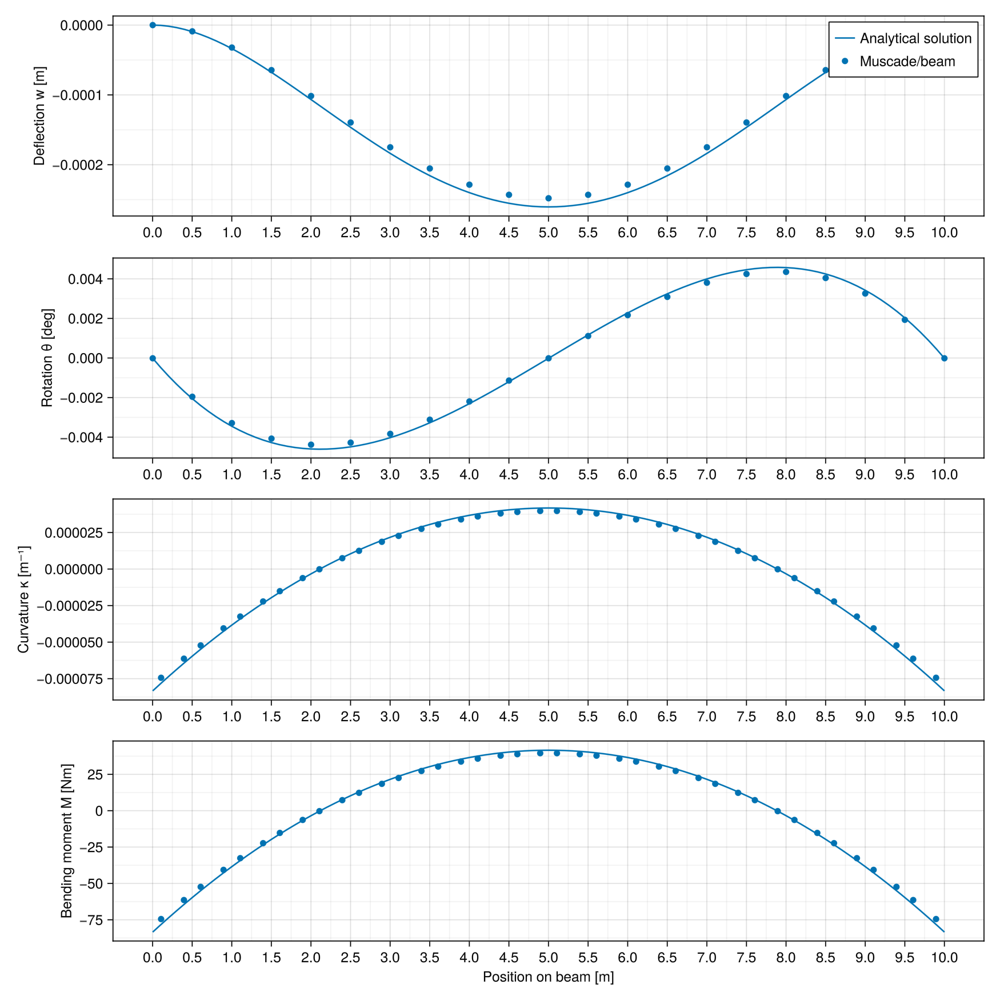

Static analysis of a beam
using Muscade, StaticArrays, GLMakie3D rotations
sinc1(x) = sinc(x/π)
function sinc1′(x)
if abs(x)>1e-3
s,c=sin(x),cos(x)
c/x -s/x^2
else
x² = x*x
x*(-1/3 +x²/30)
end
end
function sinc1″(x)
if abs(x)>1e-1
s,c=sin(x),cos(x)
-s/x -2c/x^2 +2s/x^3
else
x² = x*x
-1/3 +x²*(1/10 +x²*(-1/168 +x²*(1/6480)))
end
end
function sinc1‴(x)
if abs(x)>0.4
s,c=sin(x),cos(x)
-c/x +3s/x^2 +6c/x^3 -6s/x^4
else
x² = x*x
x*(1/5 +x²*(-1/42 +x²*(1/1080 +x²*(-1/55440 +x²*(1/4717440)))))
end
end
function sinc1⁗(x)
x² = x*x
1/5 +x²*(-1/14 +x²*(1/216 +x²*(-1/7920 +x²*(1/524160 +x²*(-1/54432000 +x²*(1/54432000 +x²*(-1/8143027200 +x²*(1/1656387532800))))))))
end
sinc1⁗′(x) = x*NaN
using Muscade
Muscade.@DiffRule1(sinc1, sinc1′( a.x) * a.dx )
Muscade.@DiffRule1(sinc1′, sinc1″( a.x) * a.dx )
Muscade.@DiffRule1(sinc1″, sinc1‴( a.x) * a.dx )
Muscade.@DiffRule1(sinc1‴, sinc1⁗( a.x) * a.dx )
Muscade.@DiffRule1(sinc1⁗, sinc1⁗′(a.x) * a.dx )
# sinc1(acos(x)), differentiable to fourth order over ]-1,1]
function scac(x)
dx = x-1
if abs(dx)>1e-2
sinc1(acos(x))
else # deliberately a long Taylor series (5th order): this function will be adiffed at least to 2nd order, up to 4th order
y = 1 + dx*(1/3 + dx*(-2/90 + dx*(0.0052911879917544626 + dx*(-0.0016229317117234072 + dx*(0.0005625)))))
end
end
const Mat33{R} = SMatrix{3,3,R,9}
const Vec3{R} = SVector{3,R}
spin( v::Vec3 ) = SMatrix{3,3}(0,v[3],-v[2],-v[3],0,v[1],v[2],-v[1],0)
spin⁻¹(m::Mat33) = SVector{3}(m[3,2]-m[2,3],m[1,3]-m[3,1],m[2,1]-m[1,2])/2
trace( m::Mat33) = m[1,1]+m[2,2]+m[3,3]
Rodrigues⁻¹(m) = spin⁻¹(m)/scac((trace(m)-1)/2) # NB: is necessarily singular for π turn
function Rodrigues(v::Vec3)
S = spin(v)
θ = norm(v)
return LinearAlgebra.I + sinc1(θ)*S + sinc1(θ/2)^2/2*S*S
end
normalize(v) = v/norm(v)
# create a rotation vector that acts on u to make it colinear with v. Fails if |u|=0, |v|=0 or θ=π
function adjust(u::Vec3{R},v::Vec3{R}) where{R}
u,v = normalize.((u,v))
c,w = dot(u,v), cross(u,v)
s = norm(w)
θ = atan(s,c)
return w/sinc1(θ)
end;Euler beam element
using StaticArrays, LinearAlgebra
using MuscadeWARNING: using LinearAlgebra.normalize in module Main conflicts with an existing identifier.Data structure containing the cross section material properties
struct BeamCrossSection
EA :: 𝕣
EI :: 𝕣
GJ :: 𝕣
endρ :: 𝕣 μ :: 𝕣 Rotation about x.... moment of inertia? Cd :: SVector{3,𝕣} Ca :: SVector{3,𝕣} A :: SVector{3,𝕣}
BeamCrossSection(;EA=EA,EI=EI,GJ=GJ) = BeamCrossSection(EA,EI,GJ);Resultant function that computes the internal loads from the strains and curvatures, and external loads on the element.
@espy function resultants(o::BeamCrossSection,ε,κ,xᵧ,rot)
☼f₁ = o.EA*ε # replace by ε₀
☼m = SVector(o.GJ*κ[1],o.EI*κ[2],o.EI*κ[3])# replace by κ₀
☼fₑ = SVector(0.,0.,0.) # external forces at Gauss point (no external moment/torque/... so far). fₑ is in local coordinates # add inertia and drag
return f₁,m,fₑ
end;Static Euler beam element, with two nodes, two Gauss points and 12 degrees of freedom.
const ngp = 2
const ndim = 3
const ndof = 12
const nnod = 2;Shape functions for a beam element with support ζ∈[-1/2,1/2]. Though the shape function matrices are sparse, do not "unroll" them. That would be faster but considerably clutter the code Nₐᵢ is the displacement field induced by node i's axial translations (also the rotation induced by node i's rotation about the element's direction/torsion)
Nₐ₁(ζ) = -ζ +1/2
Nₐ₂(ζ) = ζ +1/2;Nᵤᵢ is the deflection field induced by node i's transverse displacements
Nᵤ₁(ζ) = 2ζ^3 -3/2*ζ +1/2
Nᵤ₂(ζ) = -2ζ^3 +3/2*ζ +1/2;Nᵥᵢ is the deflection field induced by node i's rotations (bending, not torsion)
Nᵥ₁(ζ) = ζ^3 -1/2*ζ^2 -1/4*ζ +1/8
Nᵥ₂(ζ) = ζ^3 +1/2*ζ^2 -1/4*ζ -1/8;First derivatives ∂N/∂ζ used to compute strain and torsion. For an element of length L, use ∂N/∂x=∂N/∂ζ/L.
Bₐ₁(ζ) = -1
Bₐ₂(ζ) = 1;Second derivatives ∂²N/∂ζ² used to compute curvature. For an element of length L, use ∂²N/∂x²=∂²N/∂ζ²/L².
Bᵤ₁(ζ) = 12ζ
Bᵥ₁(ζ) = 6ζ-1
Bᵤ₂(ζ) = -12ζ
Bᵥ₂(ζ) = 6ζ+1;Data structure describing an EulerBeam3D element as meshed
struct EulerBeam3D{Mat} <: AbstractElement
cₘ :: SVector{3,𝕣} # Position of the middle of the element
rₘ :: Mat33{𝕣} # Orientation of the element (see code)
ζgp :: SVector{ngp,𝕣} # Location of the Gauss points for the normalized element with length 1
ζnod :: SVector{nnod,𝕣} # Location of the nodes for the normalized element with length 1
tgₘ :: SVector{ndim,𝕣} # Vector connecting the nodes of the element in the global coordinate system
tgₑ :: SVector{ndim,𝕣} # Vector connecting the nodes of the element in the local coordinate system
Nε :: SVector{ngp,SVector{ ndof,𝕣}} # strain at the Gauss points
Nκ :: SVector{ngp,SMatrix{ndim,ndof,𝕣,ndim*ndof}} # curvatures at the Gauss points
Nδx :: SVector{ngp,SMatrix{ndim,ndof,𝕣,ndim*ndof}} # coordinates of the Gauss points
dL :: SVector{ngp,𝕣} # length associated to each Gauss point
mat :: Mat # Used to store material properties (BeamCrossSection, for example)
endDefine nodes, classes, and field names for Muscade
Muscade.doflist(::Type{<:EulerBeam3D}) = (inod = (1,1,1,1,1,1, 2,2,2,2,2,2), class= ntuple(i->:X,ndof), field= (:t1,:t2,:t3,:r1,:r2,:r3, :t1,:t2,:t3,:r1,:r2,:r3) )Define now the constructor for the EulerBeam3D element. Arguments: node coordinates and direction of the first bending axis in the global coordinate system.
function EulerBeam3D(nod::Vector{Node};mat,orient2::SVector{ndim,𝕣}=SVector(0.,1.,0.))
c = coord(nod)
# Position of the middle of the element in the global coordinate system (as-meshed)
cₘ = SVector{ndim}((c[1]+c[2])/2)
# Length and tangential vector to the element in the global coordinate system
tgₘ = SVector{ndim}( c[2]-c[1] )
L = norm(tgₘ)
t = tgₘ/L
# Create t, n, b which are the longitudinal and two transverse unit vectors to the element (as-meshed).
# NB: orient2, provided by the user, will define the first bending axis.
orient2/= norm(orient2)
n = orient2 - t*dot(orient2,t)
nn = norm(n)
nn>1e-3 || muscadeerror("Provide a 'orient' input that is not nearly parallel to the element")
n /= nn
b = cross(t,n)
rₘ = SMatrix{ndim,ndim}(t...,n...,b...)
# Tangential vector and node coordinates in the local coordinate system
tgₑ = SVector{ndim}(L,0,0)
# Length associated to each Gauss point
dL = SVector{ngp }(L/2 , L/2 )
# Location of the Gauss points for a unit-length beam element, with nodes at ±1/2.
ζgp = SVector{ngp }(-1/2√3,1/2√3) # ζ∈[-1/2,1/2]
ζnod = SVector{ngp }(-1/2 ,1/2 ) # ζ∈[-1/2,1/2]
L² = L^2
# Using the first derivative of the shape function to get the strain at Gauss points
Nε = SVector{ngp}(@SVector [Bₐ₁(ζᵢ)/L,0, 0, 0, 0, 0, Bₐ₂(ζᵢ)/L,0, 0, 0, 0, 0 ] for ζᵢ∈ζgp) # Nε[igp][idof]
# Using the first and second derivatives of the shape function to get the torsion and curvature at Gauss points
Nκ = SVector{ngp}(@SMatrix [0 0 0 Bₐ₁(ζᵢ)/L 0 0 0 0 0 Bₐ₂(ζᵢ)/L 0 0 ;
0 Bᵤ₁(ζᵢ)/L² 0 0 0 Bᵥ₁(ζᵢ)/L 0 Bᵤ₂(ζᵢ)/L² 0 0 0 Bᵥ₂(ζᵢ)/L;
0 0 Bᵤ₁(ζᵢ)/L² 0 -Bᵥ₁(ζᵢ)/L 0 0 0 Bᵤ₂(ζᵢ)/L² 0 -Bᵥ₂(ζᵢ)/L 0 ] for ζᵢ∈ζgp) # Nκ[igp][idim,idof]
# Using the shape functions to get the coordinates of the Gauss points
Nδx = SVector{ngp}(@SMatrix [Nₐ₁(ζᵢ) 0 0 0 0 0 Nₐ₂(ζᵢ) 0 0 0 0 0 ;
0 Nᵤ₁(ζᵢ) 0 0 0 Nᵥ₁(ζᵢ) 0 Nᵤ₂(ζᵢ) 0 0 0 Nᵥ₂(ζᵢ) ;
0 0 Nᵤ₁(ζᵢ) 0 -Nᵥ₁(ζᵢ) 0 0 0 Nᵤ₂(ζᵢ) 0 -Nᵥ₂(ζᵢ) 0 ] for ζᵢ∈ζgp) # Nδx[igp][idim,idof]
return EulerBeam3D(cₘ,rₘ,ζgp,ζnod,tgₘ,tgₑ,Nε,Nκ,Nδx,dL,mat)
end
const saco = StaticArrays.sacollect
const v3 = SVector{3};Define now the residual function for the EulerBeam3D element.
Two simplifications:
- static
- no GP coordinates and orientation
@espy function Muscade.residual(o::EulerBeam3D, X,U,A,t,SP,dbg)
cₘ,rₘ,tgₘ,tgₑ = o.cₘ,o.rₘ,o.tgₘ,o.tgₑ # As-meshed element coordinates and describing tangential vector
Nε,Nκ,Nδx = o.Nε,o.Nκ,o.Nδx # From shape functions
ζgp,ζnod,dL = o.ζgp,o.ζnod,o.dL # Gauss points coordinates, node coordinates and length associated to each Gauss point
X₀ = ∂0(X)
P = min(2,precedence(X₀)+1)
TδXₗ,Trₛₘ,Tcₛ = Taylor{P}(X->global2local(o,X),X₀)
δXₗ,rₛₘ,cₛ = TδXₗ(X₀),Trₛₘ(X₀),Tcₛ(X₀)
T = ∂(TδXₗ)(X₀)
gp = ntuple(ngp) do igp
☼ε,☼κ,☼δxₗ = Nε[igp]∘₁δXₗ, Nκ[igp]∘₁δXₗ, Nδx[igp]∘₁δXₗ # axial strain, curvatures, displacement - all local (including their time derivatives)
☼xᵧ = rₛₘ∘₁(tgₑ*ζgp[igp]+δxₗ)+cₛ+cₘ # [ndim], global coordinates of Gauss points
f₁,m,fₑ = ☼resultants(o.mat,ε,κ,xᵧ,rₛₘ) # call the "resultant" function to compute loads (local coordinates) from strains/curvatures/etc. using material properties. Note that output is dual of input.
Rₗ = (f₁ ∘₀ Nε[igp] + m∘₁Nκ[igp] + fₑ∘₁Nδx[igp])*dL[igp] # Contribution to the local nodal load of this Gauss point [ndof] = scalar*[ndof] + [ndim]⋅[ndim,ndof] + [ndim]⋅[ndim,ndof]
@named(Rₗ)
end
R = sum(gpᵢ.Rₗ for gpᵢ∈gp) ∘₁ T
return R,noFB
end
function global2local(o::EulerBeam3D,X)
uᵧ₁,vᵧ₁,uᵧ₂,vᵧ₂ = SVector{3}(X[i] for i∈1:3), SVector{3}(X[i] for i∈4:6),SVector{3}(X[i] for i∈7:9),SVector{3}(X[i] for i∈10:12)
rₛ = Rodrigues((vᵧ₁+vᵧ₂)/2)
rₛ = Rodrigues(adjust(rₛ∘₁o.tgₘ,o.tgₘ+uᵧ₂-uᵧ₁))∘₁rₛ
rₛₘ = rₛ∘₁o.rₘ
cₛ = (uᵧ₁+uᵧ₂)/2
uₗ₁ = rₛₘ'∘₁(uᵧ₁+o.tgₘ*o.ζnod[1]-cₛ)-o.tgₑ*o.ζnod[1] #Local displacement of node 1
uₗ₂ = rₛₘ'∘₁(uᵧ₂+o.tgₘ*o.ζnod[2]-cₛ)-o.tgₑ*o.ζnod[2] #Local displacement of node 2
vₗ₁ = Rodrigues⁻¹(rₛₘ'∘₁Rodrigues(vᵧ₁)∘₁o.rₘ) #Local rotation of node 1
vₗ₂ = Rodrigues⁻¹(rₛₘ'∘₁Rodrigues(vᵧ₂)∘₁o.rₘ) #Local rotation of node 2
δXₗ = SVector(uₗ₁...,vₗ₁...,uₗ₂...,vₗ₂...) # δXₗ , T = ∂ δXₗ / ∂ ΔX
return δXₗ,rₛₘ,cₛ
endglobal2local (generic function with 1 method)Analysis
Defining the beam properties and loading. Beam clamped at both ends, subjected to uniform distributed load of intensity q
L = 10.0; # Beam length [m]
q = 10.0; # Uniform lateral load [N/m]
EI = 1e6; # Bending stiffness [Nm²]
EA = 1e6; # Axial stiffness [N]
GJ = 1e3; # Torsional stiffness [Nm²]Analytical solutions from here (which contains errors), and checked against this source
x = (0:L/100:L);Deflection (the two sources agree)
w = q*L^2*x.^2 .* (1.0 .-x/L).^2 ./ (24.0*EI);Slope (verified by differentiating the above)
θ = -q*L^2*x.*(1.0 .- 3.0*x/L + 2.0*x.^2/L^2) / (12.0*EI);Curvature (derived)
κ = -q*L^2*(1.0 .- 6.0*x/L + 6.0*x.^2/L^2) / (12.0*EI);Bending moment (the two sources do not agree)
M = -q*L^2*(1.0 .- 6.0*x/L + 6.0*x.^2/L^2) / 12.0;Shear force (the two sources agree)
V = q*L*(1.0 .- 2.0*x/L) / 2.0;Create the model
nel = 20
nnodes = nel+1
nodeCoord = hcat((0:L/nel:L),zeros(Float64,nnodes,2))
mat = BeamCrossSection(EA=EA,EI=EI,GJ=GJ)
model = Model(:TestModel)
nodid = addnode!(model,nodeCoord)
mesh = hcat(nodid[1:nnodes-1],nodid[2:nnodes])
eleid = addelement!(model,EulerBeam3D,mesh;mat=mat,orient2=SVector(0.,1.,0.))
[addelement!(model,Hold,[nodid[1]] ;field) for field∈[:t1,:t2,:t3,:r1,:r2,:r3]] # Clamp end 1
[addelement!(model,Hold,[nodid[end]];field) for field∈[:t1,:t2,:t3,:r1,:r2,:r3]] # Clamp end 2
[addelement!(model,DofLoad,[nodid[nodeidx]];field=:t2,value=t->-min(1,t)*q*L/nnodes) for nodeidx=1:nnodes]; # Distributed vertical load qSolve the problem
initialstate = initialize!(model);
state = solve(SweepX{0};initialstate,time=[0.,1.])2-element Vector{Muscade.State{1, 1, 1, @NamedTuple{γ::Float64}}}:
Muscade.State{1, 1, 1, @NamedTuple{γ::Float64}}(0.0, ([0.0, 0.0, 0.0, 0.0, 0.0, 0.0, 0.0, 0.0, 0.0, 0.0 … 0.0, 0.0, 0.0, 0.0, 0.0, 0.0, 0.0, 0.0, 0.0, 0.0],), ([0.0, 0.0, 0.0, 0.0, 0.0, 0.0, 0.0, 0.0, 0.0, 0.0 … 0.0, 0.0, 0.0, 0.0, 0.0, 0.0, 0.0, 0.0, 0.0, 0.0],), (Float64[],), Float64[], (γ = NaN,), Model(:TestModel, Node[Node(Muscade.NodID(1), [0.0, 0.0, 0.0], Muscade.DofID[Muscade.DofID(:X, 1), Muscade.DofID(:X, 2), Muscade.DofID(:X, 3), Muscade.DofID(:X, 4), Muscade.DofID(:X, 5), Muscade.DofID(:X, 6), Muscade.DofID(:X, 127), Muscade.DofID(:X, 128), Muscade.DofID(:X, 129), Muscade.DofID(:X, 130), Muscade.DofID(:X, 131), Muscade.DofID(:X, 132)], Muscade.EleID[Muscade.EleID(1, 1), Muscade.EleID(2, 1), Muscade.EleID(3, 1), Muscade.EleID(4, 1), Muscade.EleID(5, 1), Muscade.EleID(6, 1), Muscade.EleID(7, 1), Muscade.EleID(8, 1)]), Node(Muscade.NodID(2), [0.5, 0.0, 0.0], Muscade.DofID[Muscade.DofID(:X, 7), Muscade.DofID(:X, 8), Muscade.DofID(:X, 9), Muscade.DofID(:X, 10), Muscade.DofID(:X, 11), Muscade.DofID(:X, 12)], Muscade.EleID[Muscade.EleID(1, 1), Muscade.EleID(1, 2), Muscade.EleID(8, 2)]), Node(Muscade.NodID(3), [1.0, 0.0, 0.0], Muscade.DofID[Muscade.DofID(:X, 13), Muscade.DofID(:X, 14), Muscade.DofID(:X, 15), Muscade.DofID(:X, 16), Muscade.DofID(:X, 17), Muscade.DofID(:X, 18)], Muscade.EleID[Muscade.EleID(1, 2), Muscade.EleID(1, 3), Muscade.EleID(8, 3)]), Node(Muscade.NodID(4), [1.5, 0.0, 0.0], Muscade.DofID[Muscade.DofID(:X, 19), Muscade.DofID(:X, 20), Muscade.DofID(:X, 21), Muscade.DofID(:X, 22), Muscade.DofID(:X, 23), Muscade.DofID(:X, 24)], Muscade.EleID[Muscade.EleID(1, 3), Muscade.EleID(1, 4), Muscade.EleID(8, 4)]), Node(Muscade.NodID(5), [2.0, 0.0, 0.0], Muscade.DofID[Muscade.DofID(:X, 25), Muscade.DofID(:X, 26), Muscade.DofID(:X, 27), Muscade.DofID(:X, 28), Muscade.DofID(:X, 29), Muscade.DofID(:X, 30)], Muscade.EleID[Muscade.EleID(1, 4), Muscade.EleID(1, 5), Muscade.EleID(8, 5)]), Node(Muscade.NodID(6), [2.5, 0.0, 0.0], Muscade.DofID[Muscade.DofID(:X, 31), Muscade.DofID(:X, 32), Muscade.DofID(:X, 33), Muscade.DofID(:X, 34), Muscade.DofID(:X, 35), Muscade.DofID(:X, 36)], Muscade.EleID[Muscade.EleID(1, 5), Muscade.EleID(1, 6), Muscade.EleID(8, 6)]), Node(Muscade.NodID(7), [3.0, 0.0, 0.0], Muscade.DofID[Muscade.DofID(:X, 37), Muscade.DofID(:X, 38), Muscade.DofID(:X, 39), Muscade.DofID(:X, 40), Muscade.DofID(:X, 41), Muscade.DofID(:X, 42)], Muscade.EleID[Muscade.EleID(1, 6), Muscade.EleID(1, 7), Muscade.EleID(8, 7)]), Node(Muscade.NodID(8), [3.5, 0.0, 0.0], Muscade.DofID[Muscade.DofID(:X, 43), Muscade.DofID(:X, 44), Muscade.DofID(:X, 45), Muscade.DofID(:X, 46), Muscade.DofID(:X, 47), Muscade.DofID(:X, 48)], Muscade.EleID[Muscade.EleID(1, 7), Muscade.EleID(1, 8), Muscade.EleID(8, 8)]), Node(Muscade.NodID(9), [4.0, 0.0, 0.0], Muscade.DofID[Muscade.DofID(:X, 49), Muscade.DofID(:X, 50), Muscade.DofID(:X, 51), Muscade.DofID(:X, 52), Muscade.DofID(:X, 53), Muscade.DofID(:X, 54)], Muscade.EleID[Muscade.EleID(1, 8), Muscade.EleID(1, 9), Muscade.EleID(8, 9)]), Node(Muscade.NodID(10), [4.5, 0.0, 0.0], Muscade.DofID[Muscade.DofID(:X, 55), Muscade.DofID(:X, 56), Muscade.DofID(:X, 57), Muscade.DofID(:X, 58), Muscade.DofID(:X, 59), Muscade.DofID(:X, 60)], Muscade.EleID[Muscade.EleID(1, 9), Muscade.EleID(1, 10), Muscade.EleID(8, 10)]) … Node(Muscade.NodID(12), [5.5, 0.0, 0.0], Muscade.DofID[Muscade.DofID(:X, 67), Muscade.DofID(:X, 68), Muscade.DofID(:X, 69), Muscade.DofID(:X, 70), Muscade.DofID(:X, 71), Muscade.DofID(:X, 72)], Muscade.EleID[Muscade.EleID(1, 11), Muscade.EleID(1, 12), Muscade.EleID(8, 12)]), Node(Muscade.NodID(13), [6.0, 0.0, 0.0], Muscade.DofID[Muscade.DofID(:X, 73), Muscade.DofID(:X, 74), Muscade.DofID(:X, 75), Muscade.DofID(:X, 76), Muscade.DofID(:X, 77), Muscade.DofID(:X, 78)], Muscade.EleID[Muscade.EleID(1, 12), Muscade.EleID(1, 13), Muscade.EleID(8, 13)]), Node(Muscade.NodID(14), [6.5, 0.0, 0.0], Muscade.DofID[Muscade.DofID(:X, 79), Muscade.DofID(:X, 80), Muscade.DofID(:X, 81), Muscade.DofID(:X, 82), Muscade.DofID(:X, 83), Muscade.DofID(:X, 84)], Muscade.EleID[Muscade.EleID(1, 13), Muscade.EleID(1, 14), Muscade.EleID(8, 14)]), Node(Muscade.NodID(15), [7.0, 0.0, 0.0], Muscade.DofID[Muscade.DofID(:X, 85), Muscade.DofID(:X, 86), Muscade.DofID(:X, 87), Muscade.DofID(:X, 88), Muscade.DofID(:X, 89), Muscade.DofID(:X, 90)], Muscade.EleID[Muscade.EleID(1, 14), Muscade.EleID(1, 15), Muscade.EleID(8, 15)]), Node(Muscade.NodID(16), [7.5, 0.0, 0.0], Muscade.DofID[Muscade.DofID(:X, 91), Muscade.DofID(:X, 92), Muscade.DofID(:X, 93), Muscade.DofID(:X, 94), Muscade.DofID(:X, 95), Muscade.DofID(:X, 96)], Muscade.EleID[Muscade.EleID(1, 15), Muscade.EleID(1, 16), Muscade.EleID(8, 16)]), Node(Muscade.NodID(17), [8.0, 0.0, 0.0], Muscade.DofID[Muscade.DofID(:X, 97), Muscade.DofID(:X, 98), Muscade.DofID(:X, 99), Muscade.DofID(:X, 100), Muscade.DofID(:X, 101), Muscade.DofID(:X, 102)], Muscade.EleID[Muscade.EleID(1, 16), Muscade.EleID(1, 17), Muscade.EleID(8, 17)]), Node(Muscade.NodID(18), [8.5, 0.0, 0.0], Muscade.DofID[Muscade.DofID(:X, 103), Muscade.DofID(:X, 104), Muscade.DofID(:X, 105), Muscade.DofID(:X, 106), Muscade.DofID(:X, 107), Muscade.DofID(:X, 108)], Muscade.EleID[Muscade.EleID(1, 17), Muscade.EleID(1, 18), Muscade.EleID(8, 18)]), Node(Muscade.NodID(19), [9.0, 0.0, 0.0], Muscade.DofID[Muscade.DofID(:X, 109), Muscade.DofID(:X, 110), Muscade.DofID(:X, 111), Muscade.DofID(:X, 112), Muscade.DofID(:X, 113), Muscade.DofID(:X, 114)], Muscade.EleID[Muscade.EleID(1, 18), Muscade.EleID(1, 19), Muscade.EleID(8, 19)]), Node(Muscade.NodID(20), [9.5, 0.0, 0.0], Muscade.DofID[Muscade.DofID(:X, 115), Muscade.DofID(:X, 116), Muscade.DofID(:X, 117), Muscade.DofID(:X, 118), Muscade.DofID(:X, 119), Muscade.DofID(:X, 120)], Muscade.EleID[Muscade.EleID(1, 19), Muscade.EleID(1, 20), Muscade.EleID(8, 20)]), Node(Muscade.NodID(21), [10.0, 0.0, 0.0], Muscade.DofID[Muscade.DofID(:X, 121), Muscade.DofID(:X, 122), Muscade.DofID(:X, 123), Muscade.DofID(:X, 124), Muscade.DofID(:X, 125), Muscade.DofID(:X, 126), Muscade.DofID(:X, 133), Muscade.DofID(:X, 134), Muscade.DofID(:X, 135), Muscade.DofID(:X, 136), Muscade.DofID(:X, 137), Muscade.DofID(:X, 138)], Muscade.EleID[Muscade.EleID(1, 20), Muscade.EleID(2, 2), Muscade.EleID(3, 2), Muscade.EleID(4, 2), Muscade.EleID(5, 2), Muscade.EleID(6, 2), Muscade.EleID(7, 2), Muscade.EleID(8, 21)])], Vector{Muscade.Element}[[Muscade.Element(Muscade.EleID(1, 1), 1, 1, Muscade.NodID[Muscade.NodID(1), Muscade.NodID(2)], Muscade.DofID[Muscade.DofID(:X, 1), Muscade.DofID(:X, 2), Muscade.DofID(:X, 3), Muscade.DofID(:X, 4), Muscade.DofID(:X, 5), Muscade.DofID(:X, 6), Muscade.DofID(:X, 7), Muscade.DofID(:X, 8), Muscade.DofID(:X, 9), Muscade.DofID(:X, 10), Muscade.DofID(:X, 11), Muscade.DofID(:X, 12)]), Muscade.Element(Muscade.EleID(1, 2), 1, 2, Muscade.NodID[Muscade.NodID(2), Muscade.NodID(3)], Muscade.DofID[Muscade.DofID(:X, 7), Muscade.DofID(:X, 8), Muscade.DofID(:X, 9), Muscade.DofID(:X, 10), Muscade.DofID(:X, 11), Muscade.DofID(:X, 12), Muscade.DofID(:X, 13), Muscade.DofID(:X, 14), Muscade.DofID(:X, 15), Muscade.DofID(:X, 16), Muscade.DofID(:X, 17), Muscade.DofID(:X, 18)]), Muscade.Element(Muscade.EleID(1, 3), 1, 3, Muscade.NodID[Muscade.NodID(3), Muscade.NodID(4)], Muscade.DofID[Muscade.DofID(:X, 13), Muscade.DofID(:X, 14), Muscade.DofID(:X, 15), Muscade.DofID(:X, 16), Muscade.DofID(:X, 17), Muscade.DofID(:X, 18), Muscade.DofID(:X, 19), Muscade.DofID(:X, 20), Muscade.DofID(:X, 21), Muscade.DofID(:X, 22), Muscade.DofID(:X, 23), Muscade.DofID(:X, 24)]), Muscade.Element(Muscade.EleID(1, 4), 1, 4, Muscade.NodID[Muscade.NodID(4), Muscade.NodID(5)], Muscade.DofID[Muscade.DofID(:X, 19), Muscade.DofID(:X, 20), Muscade.DofID(:X, 21), Muscade.DofID(:X, 22), Muscade.DofID(:X, 23), Muscade.DofID(:X, 24), Muscade.DofID(:X, 25), Muscade.DofID(:X, 26), Muscade.DofID(:X, 27), Muscade.DofID(:X, 28), Muscade.DofID(:X, 29), Muscade.DofID(:X, 30)]), Muscade.Element(Muscade.EleID(1, 5), 1, 5, Muscade.NodID[Muscade.NodID(5), Muscade.NodID(6)], Muscade.DofID[Muscade.DofID(:X, 25), Muscade.DofID(:X, 26), Muscade.DofID(:X, 27), Muscade.DofID(:X, 28), Muscade.DofID(:X, 29), Muscade.DofID(:X, 30), Muscade.DofID(:X, 31), Muscade.DofID(:X, 32), Muscade.DofID(:X, 33), Muscade.DofID(:X, 34), Muscade.DofID(:X, 35), Muscade.DofID(:X, 36)]), Muscade.Element(Muscade.EleID(1, 6), 1, 6, Muscade.NodID[Muscade.NodID(6), Muscade.NodID(7)], Muscade.DofID[Muscade.DofID(:X, 31), Muscade.DofID(:X, 32), Muscade.DofID(:X, 33), Muscade.DofID(:X, 34), Muscade.DofID(:X, 35), Muscade.DofID(:X, 36), Muscade.DofID(:X, 37), Muscade.DofID(:X, 38), Muscade.DofID(:X, 39), Muscade.DofID(:X, 40), Muscade.DofID(:X, 41), Muscade.DofID(:X, 42)]), Muscade.Element(Muscade.EleID(1, 7), 1, 7, Muscade.NodID[Muscade.NodID(7), Muscade.NodID(8)], Muscade.DofID[Muscade.DofID(:X, 37), Muscade.DofID(:X, 38), Muscade.DofID(:X, 39), Muscade.DofID(:X, 40), Muscade.DofID(:X, 41), Muscade.DofID(:X, 42), Muscade.DofID(:X, 43), Muscade.DofID(:X, 44), Muscade.DofID(:X, 45), Muscade.DofID(:X, 46), Muscade.DofID(:X, 47), Muscade.DofID(:X, 48)]), Muscade.Element(Muscade.EleID(1, 8), 1, 8, Muscade.NodID[Muscade.NodID(8), Muscade.NodID(9)], Muscade.DofID[Muscade.DofID(:X, 43), Muscade.DofID(:X, 44), Muscade.DofID(:X, 45), Muscade.DofID(:X, 46), Muscade.DofID(:X, 47), Muscade.DofID(:X, 48), Muscade.DofID(:X, 49), Muscade.DofID(:X, 50), Muscade.DofID(:X, 51), Muscade.DofID(:X, 52), Muscade.DofID(:X, 53), Muscade.DofID(:X, 54)]), Muscade.Element(Muscade.EleID(1, 9), 1, 9, Muscade.NodID[Muscade.NodID(9), Muscade.NodID(10)], Muscade.DofID[Muscade.DofID(:X, 49), Muscade.DofID(:X, 50), Muscade.DofID(:X, 51), Muscade.DofID(:X, 52), Muscade.DofID(:X, 53), Muscade.DofID(:X, 54), Muscade.DofID(:X, 55), Muscade.DofID(:X, 56), Muscade.DofID(:X, 57), Muscade.DofID(:X, 58), Muscade.DofID(:X, 59), Muscade.DofID(:X, 60)]), Muscade.Element(Muscade.EleID(1, 10), 1, 10, Muscade.NodID[Muscade.NodID(10), Muscade.NodID(11)], Muscade.DofID[Muscade.DofID(:X, 55), Muscade.DofID(:X, 56), Muscade.DofID(:X, 57), Muscade.DofID(:X, 58), Muscade.DofID(:X, 59), Muscade.DofID(:X, 60), Muscade.DofID(:X, 61), Muscade.DofID(:X, 62), Muscade.DofID(:X, 63), Muscade.DofID(:X, 64), Muscade.DofID(:X, 65), Muscade.DofID(:X, 66)]), Muscade.Element(Muscade.EleID(1, 11), 1, 11, Muscade.NodID[Muscade.NodID(11), Muscade.NodID(12)], Muscade.DofID[Muscade.DofID(:X, 61), Muscade.DofID(:X, 62), Muscade.DofID(:X, 63), Muscade.DofID(:X, 64), Muscade.DofID(:X, 65), Muscade.DofID(:X, 66), Muscade.DofID(:X, 67), Muscade.DofID(:X, 68), Muscade.DofID(:X, 69), Muscade.DofID(:X, 70), Muscade.DofID(:X, 71), Muscade.DofID(:X, 72)]), Muscade.Element(Muscade.EleID(1, 12), 1, 12, Muscade.NodID[Muscade.NodID(12), Muscade.NodID(13)], Muscade.DofID[Muscade.DofID(:X, 67), Muscade.DofID(:X, 68), Muscade.DofID(:X, 69), Muscade.DofID(:X, 70), Muscade.DofID(:X, 71), Muscade.DofID(:X, 72), Muscade.DofID(:X, 73), Muscade.DofID(:X, 74), Muscade.DofID(:X, 75), Muscade.DofID(:X, 76), Muscade.DofID(:X, 77), Muscade.DofID(:X, 78)]), Muscade.Element(Muscade.EleID(1, 13), 1, 13, Muscade.NodID[Muscade.NodID(13), Muscade.NodID(14)], Muscade.DofID[Muscade.DofID(:X, 73), Muscade.DofID(:X, 74), Muscade.DofID(:X, 75), Muscade.DofID(:X, 76), Muscade.DofID(:X, 77), Muscade.DofID(:X, 78), Muscade.DofID(:X, 79), Muscade.DofID(:X, 80), Muscade.DofID(:X, 81), Muscade.DofID(:X, 82), Muscade.DofID(:X, 83), Muscade.DofID(:X, 84)]), Muscade.Element(Muscade.EleID(1, 14), 1, 14, Muscade.NodID[Muscade.NodID(14), Muscade.NodID(15)], Muscade.DofID[Muscade.DofID(:X, 79), Muscade.DofID(:X, 80), Muscade.DofID(:X, 81), Muscade.DofID(:X, 82), Muscade.DofID(:X, 83), Muscade.DofID(:X, 84), Muscade.DofID(:X, 85), Muscade.DofID(:X, 86), Muscade.DofID(:X, 87), Muscade.DofID(:X, 88), Muscade.DofID(:X, 89), Muscade.DofID(:X, 90)]), Muscade.Element(Muscade.EleID(1, 15), 1, 15, Muscade.NodID[Muscade.NodID(15), Muscade.NodID(16)], Muscade.DofID[Muscade.DofID(:X, 85), Muscade.DofID(:X, 86), Muscade.DofID(:X, 87), Muscade.DofID(:X, 88), Muscade.DofID(:X, 89), Muscade.DofID(:X, 90), Muscade.DofID(:X, 91), Muscade.DofID(:X, 92), Muscade.DofID(:X, 93), Muscade.DofID(:X, 94), Muscade.DofID(:X, 95), Muscade.DofID(:X, 96)]), Muscade.Element(Muscade.EleID(1, 16), 1, 16, Muscade.NodID[Muscade.NodID(16), Muscade.NodID(17)], Muscade.DofID[Muscade.DofID(:X, 91), Muscade.DofID(:X, 92), Muscade.DofID(:X, 93), Muscade.DofID(:X, 94), Muscade.DofID(:X, 95), Muscade.DofID(:X, 96), Muscade.DofID(:X, 97), Muscade.DofID(:X, 98), Muscade.DofID(:X, 99), Muscade.DofID(:X, 100), Muscade.DofID(:X, 101), Muscade.DofID(:X, 102)]), Muscade.Element(Muscade.EleID(1, 17), 1, 17, Muscade.NodID[Muscade.NodID(17), Muscade.NodID(18)], Muscade.DofID[Muscade.DofID(:X, 97), Muscade.DofID(:X, 98), Muscade.DofID(:X, 99), Muscade.DofID(:X, 100), Muscade.DofID(:X, 101), Muscade.DofID(:X, 102), Muscade.DofID(:X, 103), Muscade.DofID(:X, 104), Muscade.DofID(:X, 105), Muscade.DofID(:X, 106), Muscade.DofID(:X, 107), Muscade.DofID(:X, 108)]), Muscade.Element(Muscade.EleID(1, 18), 1, 18, Muscade.NodID[Muscade.NodID(18), Muscade.NodID(19)], Muscade.DofID[Muscade.DofID(:X, 103), Muscade.DofID(:X, 104), Muscade.DofID(:X, 105), Muscade.DofID(:X, 106), Muscade.DofID(:X, 107), Muscade.DofID(:X, 108), Muscade.DofID(:X, 109), Muscade.DofID(:X, 110), Muscade.DofID(:X, 111), Muscade.DofID(:X, 112), Muscade.DofID(:X, 113), Muscade.DofID(:X, 114)]), Muscade.Element(Muscade.EleID(1, 19), 1, 19, Muscade.NodID[Muscade.NodID(19), Muscade.NodID(20)], Muscade.DofID[Muscade.DofID(:X, 109), Muscade.DofID(:X, 110), Muscade.DofID(:X, 111), Muscade.DofID(:X, 112), Muscade.DofID(:X, 113), Muscade.DofID(:X, 114), Muscade.DofID(:X, 115), Muscade.DofID(:X, 116), Muscade.DofID(:X, 117), Muscade.DofID(:X, 118), Muscade.DofID(:X, 119), Muscade.DofID(:X, 120)]), Muscade.Element(Muscade.EleID(1, 20), 1, 20, Muscade.NodID[Muscade.NodID(20), Muscade.NodID(21)], Muscade.DofID[Muscade.DofID(:X, 115), Muscade.DofID(:X, 116), Muscade.DofID(:X, 117), Muscade.DofID(:X, 118), Muscade.DofID(:X, 119), Muscade.DofID(:X, 120), Muscade.DofID(:X, 121), Muscade.DofID(:X, 122), Muscade.DofID(:X, 123), Muscade.DofID(:X, 124), Muscade.DofID(:X, 125), Muscade.DofID(:X, 126)])], [Muscade.Element(Muscade.EleID(2, 1), 2, 1, Muscade.NodID[Muscade.NodID(1)], Muscade.DofID[Muscade.DofID(:X, 1), Muscade.DofID(:X, 127)]), Muscade.Element(Muscade.EleID(2, 2), 2, 2, Muscade.NodID[Muscade.NodID(21)], Muscade.DofID[Muscade.DofID(:X, 121), Muscade.DofID(:X, 133)])], [Muscade.Element(Muscade.EleID(3, 1), 3, 1, Muscade.NodID[Muscade.NodID(1)], Muscade.DofID[Muscade.DofID(:X, 2), Muscade.DofID(:X, 128)]), Muscade.Element(Muscade.EleID(3, 2), 3, 2, Muscade.NodID[Muscade.NodID(21)], Muscade.DofID[Muscade.DofID(:X, 122), Muscade.DofID(:X, 134)])], [Muscade.Element(Muscade.EleID(4, 1), 4, 1, Muscade.NodID[Muscade.NodID(1)], Muscade.DofID[Muscade.DofID(:X, 3), Muscade.DofID(:X, 129)]), Muscade.Element(Muscade.EleID(4, 2), 4, 2, Muscade.NodID[Muscade.NodID(21)], Muscade.DofID[Muscade.DofID(:X, 123), Muscade.DofID(:X, 135)])], [Muscade.Element(Muscade.EleID(5, 1), 5, 1, Muscade.NodID[Muscade.NodID(1)], Muscade.DofID[Muscade.DofID(:X, 4), Muscade.DofID(:X, 130)]), Muscade.Element(Muscade.EleID(5, 2), 5, 2, Muscade.NodID[Muscade.NodID(21)], Muscade.DofID[Muscade.DofID(:X, 124), Muscade.DofID(:X, 136)])], [Muscade.Element(Muscade.EleID(6, 1), 6, 1, Muscade.NodID[Muscade.NodID(1)], Muscade.DofID[Muscade.DofID(:X, 5), Muscade.DofID(:X, 131)]), Muscade.Element(Muscade.EleID(6, 2), 6, 2, Muscade.NodID[Muscade.NodID(21)], Muscade.DofID[Muscade.DofID(:X, 125), Muscade.DofID(:X, 137)])], [Muscade.Element(Muscade.EleID(7, 1), 7, 1, Muscade.NodID[Muscade.NodID(1)], Muscade.DofID[Muscade.DofID(:X, 6), Muscade.DofID(:X, 132)]), Muscade.Element(Muscade.EleID(7, 2), 7, 2, Muscade.NodID[Muscade.NodID(21)], Muscade.DofID[Muscade.DofID(:X, 126), Muscade.DofID(:X, 138)])], [Muscade.Element(Muscade.EleID(8, 1), 8, 1, Muscade.NodID[Muscade.NodID(1)], Muscade.DofID[Muscade.DofID(:X, 2)]), Muscade.Element(Muscade.EleID(8, 2), 8, 2, Muscade.NodID[Muscade.NodID(2)], Muscade.DofID[Muscade.DofID(:X, 8)]), Muscade.Element(Muscade.EleID(8, 3), 8, 3, Muscade.NodID[Muscade.NodID(3)], Muscade.DofID[Muscade.DofID(:X, 14)]), Muscade.Element(Muscade.EleID(8, 4), 8, 4, Muscade.NodID[Muscade.NodID(4)], Muscade.DofID[Muscade.DofID(:X, 20)]), Muscade.Element(Muscade.EleID(8, 5), 8, 5, Muscade.NodID[Muscade.NodID(5)], Muscade.DofID[Muscade.DofID(:X, 26)]), Muscade.Element(Muscade.EleID(8, 6), 8, 6, Muscade.NodID[Muscade.NodID(6)], Muscade.DofID[Muscade.DofID(:X, 32)]), Muscade.Element(Muscade.EleID(8, 7), 8, 7, Muscade.NodID[Muscade.NodID(7)], Muscade.DofID[Muscade.DofID(:X, 38)]), Muscade.Element(Muscade.EleID(8, 8), 8, 8, Muscade.NodID[Muscade.NodID(8)], Muscade.DofID[Muscade.DofID(:X, 44)]), Muscade.Element(Muscade.EleID(8, 9), 8, 9, Muscade.NodID[Muscade.NodID(9)], Muscade.DofID[Muscade.DofID(:X, 50)]), Muscade.Element(Muscade.EleID(8, 10), 8, 10, Muscade.NodID[Muscade.NodID(10)], Muscade.DofID[Muscade.DofID(:X, 56)]) … Muscade.Element(Muscade.EleID(8, 12), 8, 12, Muscade.NodID[Muscade.NodID(12)], Muscade.DofID[Muscade.DofID(:X, 68)]), Muscade.Element(Muscade.EleID(8, 13), 8, 13, Muscade.NodID[Muscade.NodID(13)], Muscade.DofID[Muscade.DofID(:X, 74)]), Muscade.Element(Muscade.EleID(8, 14), 8, 14, Muscade.NodID[Muscade.NodID(14)], Muscade.DofID[Muscade.DofID(:X, 80)]), Muscade.Element(Muscade.EleID(8, 15), 8, 15, Muscade.NodID[Muscade.NodID(15)], Muscade.DofID[Muscade.DofID(:X, 86)]), Muscade.Element(Muscade.EleID(8, 16), 8, 16, Muscade.NodID[Muscade.NodID(16)], Muscade.DofID[Muscade.DofID(:X, 92)]), Muscade.Element(Muscade.EleID(8, 17), 8, 17, Muscade.NodID[Muscade.NodID(17)], Muscade.DofID[Muscade.DofID(:X, 98)]), Muscade.Element(Muscade.EleID(8, 18), 8, 18, Muscade.NodID[Muscade.NodID(18)], Muscade.DofID[Muscade.DofID(:X, 104)]), Muscade.Element(Muscade.EleID(8, 19), 8, 19, Muscade.NodID[Muscade.NodID(19)], Muscade.DofID[Muscade.DofID(:X, 110)]), Muscade.Element(Muscade.EleID(8, 20), 8, 20, Muscade.NodID[Muscade.NodID(20)], Muscade.DofID[Muscade.DofID(:X, 116)]), Muscade.Element(Muscade.EleID(8, 21), 8, 21, Muscade.NodID[Muscade.NodID(21)], Muscade.DofID[Muscade.DofID(:X, 122)])]], (X = Muscade.Dof[Muscade.Dof(Muscade.DofID(:X, 1), Muscade.NodID(1), 1, Muscade.EleID[Muscade.EleID(1, 1), Muscade.EleID(2, 1)]), Muscade.Dof(Muscade.DofID(:X, 2), Muscade.NodID(1), 2, Muscade.EleID[Muscade.EleID(1, 1), Muscade.EleID(3, 1), Muscade.EleID(8, 1)]), Muscade.Dof(Muscade.DofID(:X, 3), Muscade.NodID(1), 3, Muscade.EleID[Muscade.EleID(1, 1), Muscade.EleID(4, 1)]), Muscade.Dof(Muscade.DofID(:X, 4), Muscade.NodID(1), 4, Muscade.EleID[Muscade.EleID(1, 1), Muscade.EleID(5, 1)]), Muscade.Dof(Muscade.DofID(:X, 5), Muscade.NodID(1), 5, Muscade.EleID[Muscade.EleID(1, 1), Muscade.EleID(6, 1)]), Muscade.Dof(Muscade.DofID(:X, 6), Muscade.NodID(1), 6, Muscade.EleID[Muscade.EleID(1, 1), Muscade.EleID(7, 1)]), Muscade.Dof(Muscade.DofID(:X, 7), Muscade.NodID(2), 1, Muscade.EleID[Muscade.EleID(1, 1), Muscade.EleID(1, 2)]), Muscade.Dof(Muscade.DofID(:X, 8), Muscade.NodID(2), 2, Muscade.EleID[Muscade.EleID(1, 1), Muscade.EleID(1, 2), Muscade.EleID(8, 2)]), Muscade.Dof(Muscade.DofID(:X, 9), Muscade.NodID(2), 3, Muscade.EleID[Muscade.EleID(1, 1), Muscade.EleID(1, 2)]), Muscade.Dof(Muscade.DofID(:X, 10), Muscade.NodID(2), 4, Muscade.EleID[Muscade.EleID(1, 1), Muscade.EleID(1, 2)]) … Muscade.Dof(Muscade.DofID(:X, 129), Muscade.NodID(1), 9, Muscade.EleID[Muscade.EleID(4, 1)]), Muscade.Dof(Muscade.DofID(:X, 130), Muscade.NodID(1), 10, Muscade.EleID[Muscade.EleID(5, 1)]), Muscade.Dof(Muscade.DofID(:X, 131), Muscade.NodID(1), 11, Muscade.EleID[Muscade.EleID(6, 1)]), Muscade.Dof(Muscade.DofID(:X, 132), Muscade.NodID(1), 12, Muscade.EleID[Muscade.EleID(7, 1)]), Muscade.Dof(Muscade.DofID(:X, 133), Muscade.NodID(21), 7, Muscade.EleID[Muscade.EleID(2, 2)]), Muscade.Dof(Muscade.DofID(:X, 134), Muscade.NodID(21), 8, Muscade.EleID[Muscade.EleID(3, 2)]), Muscade.Dof(Muscade.DofID(:X, 135), Muscade.NodID(21), 9, Muscade.EleID[Muscade.EleID(4, 2)]), Muscade.Dof(Muscade.DofID(:X, 136), Muscade.NodID(21), 10, Muscade.EleID[Muscade.EleID(5, 2)]), Muscade.Dof(Muscade.DofID(:X, 137), Muscade.NodID(21), 11, Muscade.EleID[Muscade.EleID(6, 2)]), Muscade.Dof(Muscade.DofID(:X, 138), Muscade.NodID(21), 12, Muscade.EleID[Muscade.EleID(7, 2)])], U = Muscade.Dof[], A = Muscade.Dof[]), Vector{E} where E<:AbstractElement[Main.EulerBeam3D{Main.BeamCrossSection}[Main.EulerBeam3D{Main.BeamCrossSection}([0.25, 0.0, 0.0], [1.0 0.0 0.0; 0.0 1.0 0.0; 0.0 0.0 1.0], [-0.2886751345948129, 0.2886751345948129], [-0.5, 0.5], [0.5, 0.0, 0.0], [0.5, 0.0, 0.0], StaticArraysCore.SVector{12, Float64}[[-2.0, 0.0, 0.0, 0.0, 0.0, 0.0, 2.0, 0.0, 0.0, 0.0, 0.0, 0.0], [-2.0, 0.0, 0.0, 0.0, 0.0, 0.0, 2.0, 0.0, 0.0, 0.0, 0.0, 0.0]], StaticArraysCore.SMatrix{3, 12, Float64, 36}[[0.0 0.0 … 0.0 0.0; 0.0 -13.856406460551021 … 0.0 -1.4641016151377553; 0.0 0.0 … 1.4641016151377553 0.0], [0.0 0.0 … 0.0 0.0; 0.0 13.856406460551021 … 0.0 5.464101615137755; 0.0 0.0 … -5.464101615137755 0.0]], StaticArraysCore.SMatrix{3, 12, Float64, 36}[[0.7886751345948129 0.0 … 0.0 0.0; 0.0 0.8849001794597506 … 0.0 -0.03522081090086451; 0.0 0.0 … 0.03522081090086451 0.0], [0.21132486540518708 0.0 … 0.0 0.0; 0.0 0.11509982054024942 … 0.0 -0.13144585576580214; 0.0 0.0 … 0.13144585576580214 0.0]], [0.25, 0.25], Main.BeamCrossSection(1.0e6, 1.0e6, 1000.0)), Main.EulerBeam3D{Main.BeamCrossSection}([0.75, 0.0, 0.0], [1.0 0.0 0.0; 0.0 1.0 0.0; 0.0 0.0 1.0], [-0.2886751345948129, 0.2886751345948129], [-0.5, 0.5], [0.5, 0.0, 0.0], [0.5, 0.0, 0.0], StaticArraysCore.SVector{12, Float64}[[-2.0, 0.0, 0.0, 0.0, 0.0, 0.0, 2.0, 0.0, 0.0, 0.0, 0.0, 0.0], [-2.0, 0.0, 0.0, 0.0, 0.0, 0.0, 2.0, 0.0, 0.0, 0.0, 0.0, 0.0]], StaticArraysCore.SMatrix{3, 12, Float64, 36}[[0.0 0.0 … 0.0 0.0; 0.0 -13.856406460551021 … 0.0 -1.4641016151377553; 0.0 0.0 … 1.4641016151377553 0.0], [0.0 0.0 … 0.0 0.0; 0.0 13.856406460551021 … 0.0 5.464101615137755; 0.0 0.0 … -5.464101615137755 0.0]], StaticArraysCore.SMatrix{3, 12, Float64, 36}[[0.7886751345948129 0.0 … 0.0 0.0; 0.0 0.8849001794597506 … 0.0 -0.03522081090086451; 0.0 0.0 … 0.03522081090086451 0.0], [0.21132486540518708 0.0 … 0.0 0.0; 0.0 0.11509982054024942 … 0.0 -0.13144585576580214; 0.0 0.0 … 0.13144585576580214 0.0]], [0.25, 0.25], Main.BeamCrossSection(1.0e6, 1.0e6, 1000.0)), Main.EulerBeam3D{Main.BeamCrossSection}([1.25, 0.0, 0.0], [1.0 0.0 0.0; 0.0 1.0 0.0; 0.0 0.0 1.0], [-0.2886751345948129, 0.2886751345948129], [-0.5, 0.5], [0.5, 0.0, 0.0], [0.5, 0.0, 0.0], StaticArraysCore.SVector{12, Float64}[[-2.0, 0.0, 0.0, 0.0, 0.0, 0.0, 2.0, 0.0, 0.0, 0.0, 0.0, 0.0], [-2.0, 0.0, 0.0, 0.0, 0.0, 0.0, 2.0, 0.0, 0.0, 0.0, 0.0, 0.0]], StaticArraysCore.SMatrix{3, 12, Float64, 36}[[0.0 0.0 … 0.0 0.0; 0.0 -13.856406460551021 … 0.0 -1.4641016151377553; 0.0 0.0 … 1.4641016151377553 0.0], [0.0 0.0 … 0.0 0.0; 0.0 13.856406460551021 … 0.0 5.464101615137755; 0.0 0.0 … -5.464101615137755 0.0]], StaticArraysCore.SMatrix{3, 12, Float64, 36}[[0.7886751345948129 0.0 … 0.0 0.0; 0.0 0.8849001794597506 … 0.0 -0.03522081090086451; 0.0 0.0 … 0.03522081090086451 0.0], [0.21132486540518708 0.0 … 0.0 0.0; 0.0 0.11509982054024942 … 0.0 -0.13144585576580214; 0.0 0.0 … 0.13144585576580214 0.0]], [0.25, 0.25], Main.BeamCrossSection(1.0e6, 1.0e6, 1000.0)), Main.EulerBeam3D{Main.BeamCrossSection}([1.75, 0.0, 0.0], [1.0 0.0 0.0; 0.0 1.0 0.0; 0.0 0.0 1.0], [-0.2886751345948129, 0.2886751345948129], [-0.5, 0.5], [0.5, 0.0, 0.0], [0.5, 0.0, 0.0], StaticArraysCore.SVector{12, Float64}[[-2.0, 0.0, 0.0, 0.0, 0.0, 0.0, 2.0, 0.0, 0.0, 0.0, 0.0, 0.0], [-2.0, 0.0, 0.0, 0.0, 0.0, 0.0, 2.0, 0.0, 0.0, 0.0, 0.0, 0.0]], StaticArraysCore.SMatrix{3, 12, Float64, 36}[[0.0 0.0 … 0.0 0.0; 0.0 -13.856406460551021 … 0.0 -1.4641016151377553; 0.0 0.0 … 1.4641016151377553 0.0], [0.0 0.0 … 0.0 0.0; 0.0 13.856406460551021 … 0.0 5.464101615137755; 0.0 0.0 … -5.464101615137755 0.0]], StaticArraysCore.SMatrix{3, 12, Float64, 36}[[0.7886751345948129 0.0 … 0.0 0.0; 0.0 0.8849001794597506 … 0.0 -0.03522081090086451; 0.0 0.0 … 0.03522081090086451 0.0], [0.21132486540518708 0.0 … 0.0 0.0; 0.0 0.11509982054024942 … 0.0 -0.13144585576580214; 0.0 0.0 … 0.13144585576580214 0.0]], [0.25, 0.25], Main.BeamCrossSection(1.0e6, 1.0e6, 1000.0)), Main.EulerBeam3D{Main.BeamCrossSection}([2.25, 0.0, 0.0], [1.0 0.0 0.0; 0.0 1.0 0.0; 0.0 0.0 1.0], [-0.2886751345948129, 0.2886751345948129], [-0.5, 0.5], [0.5, 0.0, 0.0], [0.5, 0.0, 0.0], StaticArraysCore.SVector{12, Float64}[[-2.0, 0.0, 0.0, 0.0, 0.0, 0.0, 2.0, 0.0, 0.0, 0.0, 0.0, 0.0], [-2.0, 0.0, 0.0, 0.0, 0.0, 0.0, 2.0, 0.0, 0.0, 0.0, 0.0, 0.0]], StaticArraysCore.SMatrix{3, 12, Float64, 36}[[0.0 0.0 … 0.0 0.0; 0.0 -13.856406460551021 … 0.0 -1.4641016151377553; 0.0 0.0 … 1.4641016151377553 0.0], [0.0 0.0 … 0.0 0.0; 0.0 13.856406460551021 … 0.0 5.464101615137755; 0.0 0.0 … -5.464101615137755 0.0]], StaticArraysCore.SMatrix{3, 12, Float64, 36}[[0.7886751345948129 0.0 … 0.0 0.0; 0.0 0.8849001794597506 … 0.0 -0.03522081090086451; 0.0 0.0 … 0.03522081090086451 0.0], [0.21132486540518708 0.0 … 0.0 0.0; 0.0 0.11509982054024942 … 0.0 -0.13144585576580214; 0.0 0.0 … 0.13144585576580214 0.0]], [0.25, 0.25], Main.BeamCrossSection(1.0e6, 1.0e6, 1000.0)), Main.EulerBeam3D{Main.BeamCrossSection}([2.75, 0.0, 0.0], [1.0 0.0 0.0; 0.0 1.0 0.0; 0.0 0.0 1.0], [-0.2886751345948129, 0.2886751345948129], [-0.5, 0.5], [0.5, 0.0, 0.0], [0.5, 0.0, 0.0], StaticArraysCore.SVector{12, Float64}[[-2.0, 0.0, 0.0, 0.0, 0.0, 0.0, 2.0, 0.0, 0.0, 0.0, 0.0, 0.0], [-2.0, 0.0, 0.0, 0.0, 0.0, 0.0, 2.0, 0.0, 0.0, 0.0, 0.0, 0.0]], StaticArraysCore.SMatrix{3, 12, Float64, 36}[[0.0 0.0 … 0.0 0.0; 0.0 -13.856406460551021 … 0.0 -1.4641016151377553; 0.0 0.0 … 1.4641016151377553 0.0], [0.0 0.0 … 0.0 0.0; 0.0 13.856406460551021 … 0.0 5.464101615137755; 0.0 0.0 … -5.464101615137755 0.0]], StaticArraysCore.SMatrix{3, 12, Float64, 36}[[0.7886751345948129 0.0 … 0.0 0.0; 0.0 0.8849001794597506 … 0.0 -0.03522081090086451; 0.0 0.0 … 0.03522081090086451 0.0], [0.21132486540518708 0.0 … 0.0 0.0; 0.0 0.11509982054024942 … 0.0 -0.13144585576580214; 0.0 0.0 … 0.13144585576580214 0.0]], [0.25, 0.25], Main.BeamCrossSection(1.0e6, 1.0e6, 1000.0)), Main.EulerBeam3D{Main.BeamCrossSection}([3.25, 0.0, 0.0], [1.0 0.0 0.0; 0.0 1.0 0.0; 0.0 0.0 1.0], [-0.2886751345948129, 0.2886751345948129], [-0.5, 0.5], [0.5, 0.0, 0.0], [0.5, 0.0, 0.0], StaticArraysCore.SVector{12, Float64}[[-2.0, 0.0, 0.0, 0.0, 0.0, 0.0, 2.0, 0.0, 0.0, 0.0, 0.0, 0.0], [-2.0, 0.0, 0.0, 0.0, 0.0, 0.0, 2.0, 0.0, 0.0, 0.0, 0.0, 0.0]], StaticArraysCore.SMatrix{3, 12, Float64, 36}[[0.0 0.0 … 0.0 0.0; 0.0 -13.856406460551021 … 0.0 -1.4641016151377553; 0.0 0.0 … 1.4641016151377553 0.0], [0.0 0.0 … 0.0 0.0; 0.0 13.856406460551021 … 0.0 5.464101615137755; 0.0 0.0 … -5.464101615137755 0.0]], StaticArraysCore.SMatrix{3, 12, Float64, 36}[[0.7886751345948129 0.0 … 0.0 0.0; 0.0 0.8849001794597506 … 0.0 -0.03522081090086451; 0.0 0.0 … 0.03522081090086451 0.0], [0.21132486540518708 0.0 … 0.0 0.0; 0.0 0.11509982054024942 … 0.0 -0.13144585576580214; 0.0 0.0 … 0.13144585576580214 0.0]], [0.25, 0.25], Main.BeamCrossSection(1.0e6, 1.0e6, 1000.0)), Main.EulerBeam3D{Main.BeamCrossSection}([3.75, 0.0, 0.0], [1.0 0.0 0.0; 0.0 1.0 0.0; 0.0 0.0 1.0], [-0.2886751345948129, 0.2886751345948129], [-0.5, 0.5], [0.5, 0.0, 0.0], [0.5, 0.0, 0.0], StaticArraysCore.SVector{12, Float64}[[-2.0, 0.0, 0.0, 0.0, 0.0, 0.0, 2.0, 0.0, 0.0, 0.0, 0.0, 0.0], [-2.0, 0.0, 0.0, 0.0, 0.0, 0.0, 2.0, 0.0, 0.0, 0.0, 0.0, 0.0]], StaticArraysCore.SMatrix{3, 12, Float64, 36}[[0.0 0.0 … 0.0 0.0; 0.0 -13.856406460551021 … 0.0 -1.4641016151377553; 0.0 0.0 … 1.4641016151377553 0.0], [0.0 0.0 … 0.0 0.0; 0.0 13.856406460551021 … 0.0 5.464101615137755; 0.0 0.0 … -5.464101615137755 0.0]], StaticArraysCore.SMatrix{3, 12, Float64, 36}[[0.7886751345948129 0.0 … 0.0 0.0; 0.0 0.8849001794597506 … 0.0 -0.03522081090086451; 0.0 0.0 … 0.03522081090086451 0.0], [0.21132486540518708 0.0 … 0.0 0.0; 0.0 0.11509982054024942 … 0.0 -0.13144585576580214; 0.0 0.0 … 0.13144585576580214 0.0]], [0.25, 0.25], Main.BeamCrossSection(1.0e6, 1.0e6, 1000.0)), Main.EulerBeam3D{Main.BeamCrossSection}([4.25, 0.0, 0.0], [1.0 0.0 0.0; 0.0 1.0 0.0; 0.0 0.0 1.0], [-0.2886751345948129, 0.2886751345948129], [-0.5, 0.5], [0.5, 0.0, 0.0], [0.5, 0.0, 0.0], StaticArraysCore.SVector{12, Float64}[[-2.0, 0.0, 0.0, 0.0, 0.0, 0.0, 2.0, 0.0, 0.0, 0.0, 0.0, 0.0], [-2.0, 0.0, 0.0, 0.0, 0.0, 0.0, 2.0, 0.0, 0.0, 0.0, 0.0, 0.0]], StaticArraysCore.SMatrix{3, 12, Float64, 36}[[0.0 0.0 … 0.0 0.0; 0.0 -13.856406460551021 … 0.0 -1.4641016151377553; 0.0 0.0 … 1.4641016151377553 0.0], [0.0 0.0 … 0.0 0.0; 0.0 13.856406460551021 … 0.0 5.464101615137755; 0.0 0.0 … -5.464101615137755 0.0]], StaticArraysCore.SMatrix{3, 12, Float64, 36}[[0.7886751345948129 0.0 … 0.0 0.0; 0.0 0.8849001794597506 … 0.0 -0.03522081090086451; 0.0 0.0 … 0.03522081090086451 0.0], [0.21132486540518708 0.0 … 0.0 0.0; 0.0 0.11509982054024942 … 0.0 -0.13144585576580214; 0.0 0.0 … 0.13144585576580214 0.0]], [0.25, 0.25], Main.BeamCrossSection(1.0e6, 1.0e6, 1000.0)), Main.EulerBeam3D{Main.BeamCrossSection}([4.75, 0.0, 0.0], [1.0 0.0 0.0; 0.0 1.0 0.0; 0.0 0.0 1.0], [-0.2886751345948129, 0.2886751345948129], [-0.5, 0.5], [0.5, 0.0, 0.0], [0.5, 0.0, 0.0], StaticArraysCore.SVector{12, Float64}[[-2.0, 0.0, 0.0, 0.0, 0.0, 0.0, 2.0, 0.0, 0.0, 0.0, 0.0, 0.0], [-2.0, 0.0, 0.0, 0.0, 0.0, 0.0, 2.0, 0.0, 0.0, 0.0, 0.0, 0.0]], StaticArraysCore.SMatrix{3, 12, Float64, 36}[[0.0 0.0 … 0.0 0.0; 0.0 -13.856406460551021 … 0.0 -1.4641016151377553; 0.0 0.0 … 1.4641016151377553 0.0], [0.0 0.0 … 0.0 0.0; 0.0 13.856406460551021 … 0.0 5.464101615137755; 0.0 0.0 … -5.464101615137755 0.0]], StaticArraysCore.SMatrix{3, 12, Float64, 36}[[0.7886751345948129 0.0 … 0.0 0.0; 0.0 0.8849001794597506 … 0.0 -0.03522081090086451; 0.0 0.0 … 0.03522081090086451 0.0], [0.21132486540518708 0.0 … 0.0 0.0; 0.0 0.11509982054024942 … 0.0 -0.13144585576580214; 0.0 0.0 … 0.13144585576580214 0.0]], [0.25, 0.25], Main.BeamCrossSection(1.0e6, 1.0e6, 1000.0)), Main.EulerBeam3D{Main.BeamCrossSection}([5.25, 0.0, 0.0], [1.0 0.0 0.0; 0.0 1.0 0.0; 0.0 0.0 1.0], [-0.2886751345948129, 0.2886751345948129], [-0.5, 0.5], [0.5, 0.0, 0.0], [0.5, 0.0, 0.0], StaticArraysCore.SVector{12, Float64}[[-2.0, 0.0, 0.0, 0.0, 0.0, 0.0, 2.0, 0.0, 0.0, 0.0, 0.0, 0.0], [-2.0, 0.0, 0.0, 0.0, 0.0, 0.0, 2.0, 0.0, 0.0, 0.0, 0.0, 0.0]], StaticArraysCore.SMatrix{3, 12, Float64, 36}[[0.0 0.0 … 0.0 0.0; 0.0 -13.856406460551021 … 0.0 -1.4641016151377553; 0.0 0.0 … 1.4641016151377553 0.0], [0.0 0.0 … 0.0 0.0; 0.0 13.856406460551021 … 0.0 5.464101615137755; 0.0 0.0 … -5.464101615137755 0.0]], StaticArraysCore.SMatrix{3, 12, Float64, 36}[[0.7886751345948129 0.0 … 0.0 0.0; 0.0 0.8849001794597506 … 0.0 -0.03522081090086451; 0.0 0.0 … 0.03522081090086451 0.0], [0.21132486540518708 0.0 … 0.0 0.0; 0.0 0.11509982054024942 … 0.0 -0.13144585576580214; 0.0 0.0 … 0.13144585576580214 0.0]], [0.25, 0.25], Main.BeamCrossSection(1.0e6, 1.0e6, 1000.0)), Main.EulerBeam3D{Main.BeamCrossSection}([5.75, 0.0, 0.0], [1.0 0.0 0.0; 0.0 1.0 0.0; 0.0 0.0 1.0], [-0.2886751345948129, 0.2886751345948129], [-0.5, 0.5], [0.5, 0.0, 0.0], [0.5, 0.0, 0.0], StaticArraysCore.SVector{12, Float64}[[-2.0, 0.0, 0.0, 0.0, 0.0, 0.0, 2.0, 0.0, 0.0, 0.0, 0.0, 0.0], [-2.0, 0.0, 0.0, 0.0, 0.0, 0.0, 2.0, 0.0, 0.0, 0.0, 0.0, 0.0]], StaticArraysCore.SMatrix{3, 12, Float64, 36}[[0.0 0.0 … 0.0 0.0; 0.0 -13.856406460551021 … 0.0 -1.4641016151377553; 0.0 0.0 … 1.4641016151377553 0.0], [0.0 0.0 … 0.0 0.0; 0.0 13.856406460551021 … 0.0 5.464101615137755; 0.0 0.0 … -5.464101615137755 0.0]], StaticArraysCore.SMatrix{3, 12, Float64, 36}[[0.7886751345948129 0.0 … 0.0 0.0; 0.0 0.8849001794597506 … 0.0 -0.03522081090086451; 0.0 0.0 … 0.03522081090086451 0.0], [0.21132486540518708 0.0 … 0.0 0.0; 0.0 0.11509982054024942 … 0.0 -0.13144585576580214; 0.0 0.0 … 0.13144585576580214 0.0]], [0.25, 0.25], Main.BeamCrossSection(1.0e6, 1.0e6, 1000.0)), Main.EulerBeam3D{Main.BeamCrossSection}([6.25, 0.0, 0.0], [1.0 0.0 0.0; 0.0 1.0 0.0; 0.0 0.0 1.0], [-0.2886751345948129, 0.2886751345948129], [-0.5, 0.5], [0.5, 0.0, 0.0], [0.5, 0.0, 0.0], StaticArraysCore.SVector{12, Float64}[[-2.0, 0.0, 0.0, 0.0, 0.0, 0.0, 2.0, 0.0, 0.0, 0.0, 0.0, 0.0], [-2.0, 0.0, 0.0, 0.0, 0.0, 0.0, 2.0, 0.0, 0.0, 0.0, 0.0, 0.0]], StaticArraysCore.SMatrix{3, 12, Float64, 36}[[0.0 0.0 … 0.0 0.0; 0.0 -13.856406460551021 … 0.0 -1.4641016151377553; 0.0 0.0 … 1.4641016151377553 0.0], [0.0 0.0 … 0.0 0.0; 0.0 13.856406460551021 … 0.0 5.464101615137755; 0.0 0.0 … -5.464101615137755 0.0]], StaticArraysCore.SMatrix{3, 12, Float64, 36}[[0.7886751345948129 0.0 … 0.0 0.0; 0.0 0.8849001794597506 … 0.0 -0.03522081090086451; 0.0 0.0 … 0.03522081090086451 0.0], [0.21132486540518708 0.0 … 0.0 0.0; 0.0 0.11509982054024942 … 0.0 -0.13144585576580214; 0.0 0.0 … 0.13144585576580214 0.0]], [0.25, 0.25], Main.BeamCrossSection(1.0e6, 1.0e6, 1000.0)), Main.EulerBeam3D{Main.BeamCrossSection}([6.75, 0.0, 0.0], [1.0 0.0 0.0; 0.0 1.0 0.0; 0.0 0.0 1.0], [-0.2886751345948129, 0.2886751345948129], [-0.5, 0.5], [0.5, 0.0, 0.0], [0.5, 0.0, 0.0], StaticArraysCore.SVector{12, Float64}[[-2.0, 0.0, 0.0, 0.0, 0.0, 0.0, 2.0, 0.0, 0.0, 0.0, 0.0, 0.0], [-2.0, 0.0, 0.0, 0.0, 0.0, 0.0, 2.0, 0.0, 0.0, 0.0, 0.0, 0.0]], StaticArraysCore.SMatrix{3, 12, Float64, 36}[[0.0 0.0 … 0.0 0.0; 0.0 -13.856406460551021 … 0.0 -1.4641016151377553; 0.0 0.0 … 1.4641016151377553 0.0], [0.0 0.0 … 0.0 0.0; 0.0 13.856406460551021 … 0.0 5.464101615137755; 0.0 0.0 … -5.464101615137755 0.0]], StaticArraysCore.SMatrix{3, 12, Float64, 36}[[0.7886751345948129 0.0 … 0.0 0.0; 0.0 0.8849001794597506 … 0.0 -0.03522081090086451; 0.0 0.0 … 0.03522081090086451 0.0], [0.21132486540518708 0.0 … 0.0 0.0; 0.0 0.11509982054024942 … 0.0 -0.13144585576580214; 0.0 0.0 … 0.13144585576580214 0.0]], [0.25, 0.25], Main.BeamCrossSection(1.0e6, 1.0e6, 1000.0)), Main.EulerBeam3D{Main.BeamCrossSection}([7.25, 0.0, 0.0], [1.0 0.0 0.0; 0.0 1.0 0.0; 0.0 0.0 1.0], [-0.2886751345948129, 0.2886751345948129], [-0.5, 0.5], [0.5, 0.0, 0.0], [0.5, 0.0, 0.0], StaticArraysCore.SVector{12, Float64}[[-2.0, 0.0, 0.0, 0.0, 0.0, 0.0, 2.0, 0.0, 0.0, 0.0, 0.0, 0.0], [-2.0, 0.0, 0.0, 0.0, 0.0, 0.0, 2.0, 0.0, 0.0, 0.0, 0.0, 0.0]], StaticArraysCore.SMatrix{3, 12, Float64, 36}[[0.0 0.0 … 0.0 0.0; 0.0 -13.856406460551021 … 0.0 -1.4641016151377553; 0.0 0.0 … 1.4641016151377553 0.0], [0.0 0.0 … 0.0 0.0; 0.0 13.856406460551021 … 0.0 5.464101615137755; 0.0 0.0 … -5.464101615137755 0.0]], StaticArraysCore.SMatrix{3, 12, Float64, 36}[[0.7886751345948129 0.0 … 0.0 0.0; 0.0 0.8849001794597506 … 0.0 -0.03522081090086451; 0.0 0.0 … 0.03522081090086451 0.0], [0.21132486540518708 0.0 … 0.0 0.0; 0.0 0.11509982054024942 … 0.0 -0.13144585576580214; 0.0 0.0 … 0.13144585576580214 0.0]], [0.25, 0.25], Main.BeamCrossSection(1.0e6, 1.0e6, 1000.0)), Main.EulerBeam3D{Main.BeamCrossSection}([7.75, 0.0, 0.0], [1.0 0.0 0.0; 0.0 1.0 0.0; 0.0 0.0 1.0], [-0.2886751345948129, 0.2886751345948129], [-0.5, 0.5], [0.5, 0.0, 0.0], [0.5, 0.0, 0.0], StaticArraysCore.SVector{12, Float64}[[-2.0, 0.0, 0.0, 0.0, 0.0, 0.0, 2.0, 0.0, 0.0, 0.0, 0.0, 0.0], [-2.0, 0.0, 0.0, 0.0, 0.0, 0.0, 2.0, 0.0, 0.0, 0.0, 0.0, 0.0]], StaticArraysCore.SMatrix{3, 12, Float64, 36}[[0.0 0.0 … 0.0 0.0; 0.0 -13.856406460551021 … 0.0 -1.4641016151377553; 0.0 0.0 … 1.4641016151377553 0.0], [0.0 0.0 … 0.0 0.0; 0.0 13.856406460551021 … 0.0 5.464101615137755; 0.0 0.0 … -5.464101615137755 0.0]], StaticArraysCore.SMatrix{3, 12, Float64, 36}[[0.7886751345948129 0.0 … 0.0 0.0; 0.0 0.8849001794597506 … 0.0 -0.03522081090086451; 0.0 0.0 … 0.03522081090086451 0.0], [0.21132486540518708 0.0 … 0.0 0.0; 0.0 0.11509982054024942 … 0.0 -0.13144585576580214; 0.0 0.0 … 0.13144585576580214 0.0]], [0.25, 0.25], Main.BeamCrossSection(1.0e6, 1.0e6, 1000.0)), Main.EulerBeam3D{Main.BeamCrossSection}([8.25, 0.0, 0.0], [1.0 0.0 0.0; 0.0 1.0 0.0; 0.0 0.0 1.0], [-0.2886751345948129, 0.2886751345948129], [-0.5, 0.5], [0.5, 0.0, 0.0], [0.5, 0.0, 0.0], StaticArraysCore.SVector{12, Float64}[[-2.0, 0.0, 0.0, 0.0, 0.0, 0.0, 2.0, 0.0, 0.0, 0.0, 0.0, 0.0], [-2.0, 0.0, 0.0, 0.0, 0.0, 0.0, 2.0, 0.0, 0.0, 0.0, 0.0, 0.0]], StaticArraysCore.SMatrix{3, 12, Float64, 36}[[0.0 0.0 … 0.0 0.0; 0.0 -13.856406460551021 … 0.0 -1.4641016151377553; 0.0 0.0 … 1.4641016151377553 0.0], [0.0 0.0 … 0.0 0.0; 0.0 13.856406460551021 … 0.0 5.464101615137755; 0.0 0.0 … -5.464101615137755 0.0]], StaticArraysCore.SMatrix{3, 12, Float64, 36}[[0.7886751345948129 0.0 … 0.0 0.0; 0.0 0.8849001794597506 … 0.0 -0.03522081090086451; 0.0 0.0 … 0.03522081090086451 0.0], [0.21132486540518708 0.0 … 0.0 0.0; 0.0 0.11509982054024942 … 0.0 -0.13144585576580214; 0.0 0.0 … 0.13144585576580214 0.0]], [0.25, 0.25], Main.BeamCrossSection(1.0e6, 1.0e6, 1000.0)), Main.EulerBeam3D{Main.BeamCrossSection}([8.75, 0.0, 0.0], [1.0 0.0 0.0; 0.0 1.0 0.0; 0.0 0.0 1.0], [-0.2886751345948129, 0.2886751345948129], [-0.5, 0.5], [0.5, 0.0, 0.0], [0.5, 0.0, 0.0], StaticArraysCore.SVector{12, Float64}[[-2.0, 0.0, 0.0, 0.0, 0.0, 0.0, 2.0, 0.0, 0.0, 0.0, 0.0, 0.0], [-2.0, 0.0, 0.0, 0.0, 0.0, 0.0, 2.0, 0.0, 0.0, 0.0, 0.0, 0.0]], StaticArraysCore.SMatrix{3, 12, Float64, 36}[[0.0 0.0 … 0.0 0.0; 0.0 -13.856406460551021 … 0.0 -1.4641016151377553; 0.0 0.0 … 1.4641016151377553 0.0], [0.0 0.0 … 0.0 0.0; 0.0 13.856406460551021 … 0.0 5.464101615137755; 0.0 0.0 … -5.464101615137755 0.0]], StaticArraysCore.SMatrix{3, 12, Float64, 36}[[0.7886751345948129 0.0 … 0.0 0.0; 0.0 0.8849001794597506 … 0.0 -0.03522081090086451; 0.0 0.0 … 0.03522081090086451 0.0], [0.21132486540518708 0.0 … 0.0 0.0; 0.0 0.11509982054024942 … 0.0 -0.13144585576580214; 0.0 0.0 … 0.13144585576580214 0.0]], [0.25, 0.25], Main.BeamCrossSection(1.0e6, 1.0e6, 1000.0)), Main.EulerBeam3D{Main.BeamCrossSection}([9.25, 0.0, 0.0], [1.0 0.0 0.0; 0.0 1.0 0.0; 0.0 0.0 1.0], [-0.2886751345948129, 0.2886751345948129], [-0.5, 0.5], [0.5, 0.0, 0.0], [0.5, 0.0, 0.0], StaticArraysCore.SVector{12, Float64}[[-2.0, 0.0, 0.0, 0.0, 0.0, 0.0, 2.0, 0.0, 0.0, 0.0, 0.0, 0.0], [-2.0, 0.0, 0.0, 0.0, 0.0, 0.0, 2.0, 0.0, 0.0, 0.0, 0.0, 0.0]], StaticArraysCore.SMatrix{3, 12, Float64, 36}[[0.0 0.0 … 0.0 0.0; 0.0 -13.856406460551021 … 0.0 -1.4641016151377553; 0.0 0.0 … 1.4641016151377553 0.0], [0.0 0.0 … 0.0 0.0; 0.0 13.856406460551021 … 0.0 5.464101615137755; 0.0 0.0 … -5.464101615137755 0.0]], StaticArraysCore.SMatrix{3, 12, Float64, 36}[[0.7886751345948129 0.0 … 0.0 0.0; 0.0 0.8849001794597506 … 0.0 -0.03522081090086451; 0.0 0.0 … 0.03522081090086451 0.0], [0.21132486540518708 0.0 … 0.0 0.0; 0.0 0.11509982054024942 … 0.0 -0.13144585576580214; 0.0 0.0 … 0.13144585576580214 0.0]], [0.25, 0.25], Main.BeamCrossSection(1.0e6, 1.0e6, 1000.0)), Main.EulerBeam3D{Main.BeamCrossSection}([9.75, 0.0, 0.0], [1.0 0.0 0.0; 0.0 1.0 0.0; 0.0 0.0 1.0], [-0.2886751345948129, 0.2886751345948129], [-0.5, 0.5], [0.5, 0.0, 0.0], [0.5, 0.0, 0.0], StaticArraysCore.SVector{12, Float64}[[-2.0, 0.0, 0.0, 0.0, 0.0, 0.0, 2.0, 0.0, 0.0, 0.0, 0.0, 0.0], [-2.0, 0.0, 0.0, 0.0, 0.0, 0.0, 2.0, 0.0, 0.0, 0.0, 0.0, 0.0]], StaticArraysCore.SMatrix{3, 12, Float64, 36}[[0.0 0.0 … 0.0 0.0; 0.0 -13.856406460551021 … 0.0 -1.4641016151377553; 0.0 0.0 … 1.4641016151377553 0.0], [0.0 0.0 … 0.0 0.0; 0.0 13.856406460551021 … 0.0 5.464101615137755; 0.0 0.0 … -5.464101615137755 0.0]], StaticArraysCore.SMatrix{3, 12, Float64, 36}[[0.7886751345948129 0.0 … 0.0 0.0; 0.0 0.8849001794597506 … 0.0 -0.03522081090086451; 0.0 0.0 … 0.03522081090086451 0.0], [0.21132486540518708 0.0 … 0.0 0.0; 0.0 0.11509982054024942 … 0.0 -0.13144585576580214; 0.0 0.0 … 0.13144585576580214 0.0]], [0.25, 0.25], Main.BeamCrossSection(1.0e6, 1.0e6, 1000.0))], [DofConstraint{:X, 1, 0, 0, (1,), (:t1,), (), (), (), (), 1, :λt1, Muscade.var"#gap#162", Tuple{}, typeof(equal)}(Muscade.var"#gap#162"(), (), Muscade.equal), DofConstraint{:X, 1, 0, 0, (1,), (:t1,), (), (), (), (), 1, :λt1, Muscade.var"#gap#162", Tuple{}, typeof(equal)}(Muscade.var"#gap#162"(), (), Muscade.equal)], [DofConstraint{:X, 1, 0, 0, (1,), (:t2,), (), (), (), (), 1, :λt2, Muscade.var"#gap#162", Tuple{}, typeof(equal)}(Muscade.var"#gap#162"(), (), Muscade.equal), DofConstraint{:X, 1, 0, 0, (1,), (:t2,), (), (), (), (), 1, :λt2, Muscade.var"#gap#162", Tuple{}, typeof(equal)}(Muscade.var"#gap#162"(), (), Muscade.equal)], [DofConstraint{:X, 1, 0, 0, (1,), (:t3,), (), (), (), (), 1, :λt3, Muscade.var"#gap#162", Tuple{}, typeof(equal)}(Muscade.var"#gap#162"(), (), Muscade.equal), DofConstraint{:X, 1, 0, 0, (1,), (:t3,), (), (), (), (), 1, :λt3, Muscade.var"#gap#162", Tuple{}, typeof(equal)}(Muscade.var"#gap#162"(), (), Muscade.equal)], [DofConstraint{:X, 1, 0, 0, (1,), (:r1,), (), (), (), (), 1, :λr1, Muscade.var"#gap#162", Tuple{}, typeof(equal)}(Muscade.var"#gap#162"(), (), Muscade.equal), DofConstraint{:X, 1, 0, 0, (1,), (:r1,), (), (), (), (), 1, :λr1, Muscade.var"#gap#162", Tuple{}, typeof(equal)}(Muscade.var"#gap#162"(), (), Muscade.equal)], [DofConstraint{:X, 1, 0, 0, (1,), (:r2,), (), (), (), (), 1, :λr2, Muscade.var"#gap#162", Tuple{}, typeof(equal)}(Muscade.var"#gap#162"(), (), Muscade.equal), DofConstraint{:X, 1, 0, 0, (1,), (:r2,), (), (), (), (), 1, :λr2, Muscade.var"#gap#162", Tuple{}, typeof(equal)}(Muscade.var"#gap#162"(), (), Muscade.equal)], [DofConstraint{:X, 1, 0, 0, (1,), (:r3,), (), (), (), (), 1, :λr3, Muscade.var"#gap#162", Tuple{}, typeof(equal)}(Muscade.var"#gap#162"(), (), Muscade.equal), DofConstraint{:X, 1, 0, 0, (1,), (:r3,), (), (), (), (), 1, :λr3, Muscade.var"#gap#162", Tuple{}, typeof(equal)}(Muscade.var"#gap#162"(), (), Muscade.equal)], [DofLoad{:t2, Main.var"#38#40", Base.Pairs{Symbol, Union{}, Tuple{}, @NamedTuple{}}}(Main.var"#38#40"(), Base.Pairs{Symbol, Union{}, Tuple{}, @NamedTuple{}}()), DofLoad{:t2, Main.var"#38#40", Base.Pairs{Symbol, Union{}, Tuple{}, @NamedTuple{}}}(Main.var"#38#40"(), Base.Pairs{Symbol, Union{}, Tuple{}, @NamedTuple{}}()), DofLoad{:t2, Main.var"#38#40", Base.Pairs{Symbol, Union{}, Tuple{}, @NamedTuple{}}}(Main.var"#38#40"(), Base.Pairs{Symbol, Union{}, Tuple{}, @NamedTuple{}}()), DofLoad{:t2, Main.var"#38#40", Base.Pairs{Symbol, Union{}, Tuple{}, @NamedTuple{}}}(Main.var"#38#40"(), Base.Pairs{Symbol, Union{}, Tuple{}, @NamedTuple{}}()), DofLoad{:t2, Main.var"#38#40", Base.Pairs{Symbol, Union{}, Tuple{}, @NamedTuple{}}}(Main.var"#38#40"(), Base.Pairs{Symbol, Union{}, Tuple{}, @NamedTuple{}}()), DofLoad{:t2, Main.var"#38#40", Base.Pairs{Symbol, Union{}, Tuple{}, @NamedTuple{}}}(Main.var"#38#40"(), Base.Pairs{Symbol, Union{}, Tuple{}, @NamedTuple{}}()), DofLoad{:t2, Main.var"#38#40", Base.Pairs{Symbol, Union{}, Tuple{}, @NamedTuple{}}}(Main.var"#38#40"(), Base.Pairs{Symbol, Union{}, Tuple{}, @NamedTuple{}}()), DofLoad{:t2, Main.var"#38#40", Base.Pairs{Symbol, Union{}, Tuple{}, @NamedTuple{}}}(Main.var"#38#40"(), Base.Pairs{Symbol, Union{}, Tuple{}, @NamedTuple{}}()), DofLoad{:t2, Main.var"#38#40", Base.Pairs{Symbol, Union{}, Tuple{}, @NamedTuple{}}}(Main.var"#38#40"(), Base.Pairs{Symbol, Union{}, Tuple{}, @NamedTuple{}}()), DofLoad{:t2, Main.var"#38#40", Base.Pairs{Symbol, Union{}, Tuple{}, @NamedTuple{}}}(Main.var"#38#40"(), Base.Pairs{Symbol, Union{}, Tuple{}, @NamedTuple{}}()) … DofLoad{:t2, Main.var"#38#40", Base.Pairs{Symbol, Union{}, Tuple{}, @NamedTuple{}}}(Main.var"#38#40"(), Base.Pairs{Symbol, Union{}, Tuple{}, @NamedTuple{}}()), DofLoad{:t2, Main.var"#38#40", Base.Pairs{Symbol, Union{}, Tuple{}, @NamedTuple{}}}(Main.var"#38#40"(), Base.Pairs{Symbol, Union{}, Tuple{}, @NamedTuple{}}()), DofLoad{:t2, Main.var"#38#40", Base.Pairs{Symbol, Union{}, Tuple{}, @NamedTuple{}}}(Main.var"#38#40"(), Base.Pairs{Symbol, Union{}, Tuple{}, @NamedTuple{}}()), DofLoad{:t2, Main.var"#38#40", Base.Pairs{Symbol, Union{}, Tuple{}, @NamedTuple{}}}(Main.var"#38#40"(), Base.Pairs{Symbol, Union{}, Tuple{}, @NamedTuple{}}()), DofLoad{:t2, Main.var"#38#40", Base.Pairs{Symbol, Union{}, Tuple{}, @NamedTuple{}}}(Main.var"#38#40"(), Base.Pairs{Symbol, Union{}, Tuple{}, @NamedTuple{}}()), DofLoad{:t2, Main.var"#38#40", Base.Pairs{Symbol, Union{}, Tuple{}, @NamedTuple{}}}(Main.var"#38#40"(), Base.Pairs{Symbol, Union{}, Tuple{}, @NamedTuple{}}()), DofLoad{:t2, Main.var"#38#40", Base.Pairs{Symbol, Union{}, Tuple{}, @NamedTuple{}}}(Main.var"#38#40"(), Base.Pairs{Symbol, Union{}, Tuple{}, @NamedTuple{}}()), DofLoad{:t2, Main.var"#38#40", Base.Pairs{Symbol, Union{}, Tuple{}, @NamedTuple{}}}(Main.var"#38#40"(), Base.Pairs{Symbol, Union{}, Tuple{}, @NamedTuple{}}()), DofLoad{:t2, Main.var"#38#40", Base.Pairs{Symbol, Union{}, Tuple{}, @NamedTuple{}}}(Main.var"#38#40"(), Base.Pairs{Symbol, Union{}, Tuple{}, @NamedTuple{}}()), DofLoad{:t2, Main.var"#38#40", Base.Pairs{Symbol, Union{}, Tuple{}, @NamedTuple{}}}(Main.var"#38#40"(), Base.Pairs{Symbol, Union{}, Tuple{}, @NamedTuple{}}())]], Muscade.DofTyp[Muscade.DofTyp(:X, :t1, 1.0, Muscade.DofID[Muscade.DofID(:X, 1), Muscade.DofID(:X, 7), Muscade.DofID(:X, 13), Muscade.DofID(:X, 19), Muscade.DofID(:X, 25), Muscade.DofID(:X, 31), Muscade.DofID(:X, 37), Muscade.DofID(:X, 43), Muscade.DofID(:X, 49), Muscade.DofID(:X, 55) … Muscade.DofID(:X, 67), Muscade.DofID(:X, 73), Muscade.DofID(:X, 79), Muscade.DofID(:X, 85), Muscade.DofID(:X, 91), Muscade.DofID(:X, 97), Muscade.DofID(:X, 103), Muscade.DofID(:X, 109), Muscade.DofID(:X, 115), Muscade.DofID(:X, 121)]), Muscade.DofTyp(:X, :t2, 1.0, Muscade.DofID[Muscade.DofID(:X, 2), Muscade.DofID(:X, 8), Muscade.DofID(:X, 14), Muscade.DofID(:X, 20), Muscade.DofID(:X, 26), Muscade.DofID(:X, 32), Muscade.DofID(:X, 38), Muscade.DofID(:X, 44), Muscade.DofID(:X, 50), Muscade.DofID(:X, 56) … Muscade.DofID(:X, 68), Muscade.DofID(:X, 74), Muscade.DofID(:X, 80), Muscade.DofID(:X, 86), Muscade.DofID(:X, 92), Muscade.DofID(:X, 98), Muscade.DofID(:X, 104), Muscade.DofID(:X, 110), Muscade.DofID(:X, 116), Muscade.DofID(:X, 122)]), Muscade.DofTyp(:X, :t3, 1.0, Muscade.DofID[Muscade.DofID(:X, 3), Muscade.DofID(:X, 9), Muscade.DofID(:X, 15), Muscade.DofID(:X, 21), Muscade.DofID(:X, 27), Muscade.DofID(:X, 33), Muscade.DofID(:X, 39), Muscade.DofID(:X, 45), Muscade.DofID(:X, 51), Muscade.DofID(:X, 57) … Muscade.DofID(:X, 69), Muscade.DofID(:X, 75), Muscade.DofID(:X, 81), Muscade.DofID(:X, 87), Muscade.DofID(:X, 93), Muscade.DofID(:X, 99), Muscade.DofID(:X, 105), Muscade.DofID(:X, 111), Muscade.DofID(:X, 117), Muscade.DofID(:X, 123)]), Muscade.DofTyp(:X, :r1, 1.0, Muscade.DofID[Muscade.DofID(:X, 4), Muscade.DofID(:X, 10), Muscade.DofID(:X, 16), Muscade.DofID(:X, 22), Muscade.DofID(:X, 28), Muscade.DofID(:X, 34), Muscade.DofID(:X, 40), Muscade.DofID(:X, 46), Muscade.DofID(:X, 52), Muscade.DofID(:X, 58) … Muscade.DofID(:X, 70), Muscade.DofID(:X, 76), Muscade.DofID(:X, 82), Muscade.DofID(:X, 88), Muscade.DofID(:X, 94), Muscade.DofID(:X, 100), Muscade.DofID(:X, 106), Muscade.DofID(:X, 112), Muscade.DofID(:X, 118), Muscade.DofID(:X, 124)]), Muscade.DofTyp(:X, :r2, 1.0, Muscade.DofID[Muscade.DofID(:X, 5), Muscade.DofID(:X, 11), Muscade.DofID(:X, 17), Muscade.DofID(:X, 23), Muscade.DofID(:X, 29), Muscade.DofID(:X, 35), Muscade.DofID(:X, 41), Muscade.DofID(:X, 47), Muscade.DofID(:X, 53), Muscade.DofID(:X, 59) … Muscade.DofID(:X, 71), Muscade.DofID(:X, 77), Muscade.DofID(:X, 83), Muscade.DofID(:X, 89), Muscade.DofID(:X, 95), Muscade.DofID(:X, 101), Muscade.DofID(:X, 107), Muscade.DofID(:X, 113), Muscade.DofID(:X, 119), Muscade.DofID(:X, 125)]), Muscade.DofTyp(:X, :r3, 1.0, Muscade.DofID[Muscade.DofID(:X, 6), Muscade.DofID(:X, 12), Muscade.DofID(:X, 18), Muscade.DofID(:X, 24), Muscade.DofID(:X, 30), Muscade.DofID(:X, 36), Muscade.DofID(:X, 42), Muscade.DofID(:X, 48), Muscade.DofID(:X, 54), Muscade.DofID(:X, 60) … Muscade.DofID(:X, 72), Muscade.DofID(:X, 78), Muscade.DofID(:X, 84), Muscade.DofID(:X, 90), Muscade.DofID(:X, 96), Muscade.DofID(:X, 102), Muscade.DofID(:X, 108), Muscade.DofID(:X, 114), Muscade.DofID(:X, 120), Muscade.DofID(:X, 126)]), Muscade.DofTyp(:X, :λt1, 1.0, Muscade.DofID[Muscade.DofID(:X, 127), Muscade.DofID(:X, 133)]), Muscade.DofTyp(:X, :λt2, 1.0, Muscade.DofID[Muscade.DofID(:X, 128), Muscade.DofID(:X, 134)]), Muscade.DofTyp(:X, :λt3, 1.0, Muscade.DofID[Muscade.DofID(:X, 129), Muscade.DofID(:X, 135)]), Muscade.DofTyp(:X, :λr1, 1.0, Muscade.DofID[Muscade.DofID(:X, 130), Muscade.DofID(:X, 136)]), Muscade.DofTyp(:X, :λr2, 1.0, Muscade.DofID[Muscade.DofID(:X, 131), Muscade.DofID(:X, 137)]), Muscade.DofTyp(:X, :λr3, 1.0, Muscade.DofID[Muscade.DofID(:X, 132), Muscade.DofID(:X, 138)])], 1.0, true), Muscade.Disassembler(Muscade.EletypDisassembler[Muscade.EletypDisassembler{12, 0, 0}(Muscade.XUA{Int64, 12, 0, 0}[Muscade.XUA{Int64, 12, 0, 0}([1, 2, 3, 4, 5, 6, 7, 8, 9, 10, 11, 12], Int64[], Int64[]), Muscade.XUA{Int64, 12, 0, 0}([7, 8, 9, 10, 11, 12, 13, 14, 15, 16, 17, 18], Int64[], Int64[]), Muscade.XUA{Int64, 12, 0, 0}([13, 14, 15, 16, 17, 18, 19, 20, 21, 22, 23, 24], Int64[], Int64[]), Muscade.XUA{Int64, 12, 0, 0}([19, 20, 21, 22, 23, 24, 25, 26, 27, 28, 29, 30], Int64[], Int64[]), Muscade.XUA{Int64, 12, 0, 0}([25, 26, 27, 28, 29, 30, 31, 32, 33, 34, 35, 36], Int64[], Int64[]), Muscade.XUA{Int64, 12, 0, 0}([31, 32, 33, 34, 35, 36, 37, 38, 39, 40, 41, 42], Int64[], Int64[]), Muscade.XUA{Int64, 12, 0, 0}([37, 38, 39, 40, 41, 42, 43, 44, 45, 46, 47, 48], Int64[], Int64[]), Muscade.XUA{Int64, 12, 0, 0}([43, 44, 45, 46, 47, 48, 49, 50, 51, 52, 53, 54], Int64[], Int64[]), Muscade.XUA{Int64, 12, 0, 0}([49, 50, 51, 52, 53, 54, 55, 56, 57, 58, 59, 60], Int64[], Int64[]), Muscade.XUA{Int64, 12, 0, 0}([55, 56, 57, 58, 59, 60, 61, 62, 63, 64, 65, 66], Int64[], Int64[]), Muscade.XUA{Int64, 12, 0, 0}([61, 62, 63, 64, 65, 66, 67, 68, 69, 70, 71, 72], Int64[], Int64[]), Muscade.XUA{Int64, 12, 0, 0}([67, 68, 69, 70, 71, 72, 73, 74, 75, 76, 77, 78], Int64[], Int64[]), Muscade.XUA{Int64, 12, 0, 0}([73, 74, 75, 76, 77, 78, 79, 80, 81, 82, 83, 84], Int64[], Int64[]), Muscade.XUA{Int64, 12, 0, 0}([79, 80, 81, 82, 83, 84, 85, 86, 87, 88, 89, 90], Int64[], Int64[]), Muscade.XUA{Int64, 12, 0, 0}([85, 86, 87, 88, 89, 90, 91, 92, 93, 94, 95, 96], Int64[], Int64[]), Muscade.XUA{Int64, 12, 0, 0}([91, 92, 93, 94, 95, 96, 97, 98, 99, 100, 101, 102], Int64[], Int64[]), Muscade.XUA{Int64, 12, 0, 0}([97, 98, 99, 100, 101, 102, 103, 104, 105, 106, 107, 108], Int64[], Int64[]), Muscade.XUA{Int64, 12, 0, 0}([103, 104, 105, 106, 107, 108, 109, 110, 111, 112, 113, 114], Int64[], Int64[]), Muscade.XUA{Int64, 12, 0, 0}([109, 110, 111, 112, 113, 114, 115, 116, 117, 118, 119, 120], Int64[], Int64[]), Muscade.XUA{Int64, 12, 0, 0}([115, 116, 117, 118, 119, 120, 121, 122, 123, 124, 125, 126], Int64[], Int64[])], Muscade.ΛXUA{Float64, 12, 0, 0}([1.0, 1.0, 1.0, 1.0, 1.0, 1.0, 1.0, 1.0, 1.0, 1.0, 1.0, 1.0], [1.0, 1.0, 1.0, 1.0, 1.0, 1.0, 1.0, 1.0, 1.0, 1.0, 1.0, 1.0], Float64[], Float64[])), Muscade.EletypDisassembler{2, 0, 0}(Muscade.XUA{Int64, 2, 0, 0}[Muscade.XUA{Int64, 2, 0, 0}([1, 127], Int64[], Int64[]), Muscade.XUA{Int64, 2, 0, 0}([121, 133], Int64[], Int64[])], Muscade.ΛXUA{Float64, 2, 0, 0}([1.0, 1.0], [1.0, 1.0], Float64[], Float64[])), Muscade.EletypDisassembler{2, 0, 0}(Muscade.XUA{Int64, 2, 0, 0}[Muscade.XUA{Int64, 2, 0, 0}([2, 128], Int64[], Int64[]), Muscade.XUA{Int64, 2, 0, 0}([122, 134], Int64[], Int64[])], Muscade.ΛXUA{Float64, 2, 0, 0}([1.0, 1.0], [1.0, 1.0], Float64[], Float64[])), Muscade.EletypDisassembler{2, 0, 0}(Muscade.XUA{Int64, 2, 0, 0}[Muscade.XUA{Int64, 2, 0, 0}([3, 129], Int64[], Int64[]), Muscade.XUA{Int64, 2, 0, 0}([123, 135], Int64[], Int64[])], Muscade.ΛXUA{Float64, 2, 0, 0}([1.0, 1.0], [1.0, 1.0], Float64[], Float64[])), Muscade.EletypDisassembler{2, 0, 0}(Muscade.XUA{Int64, 2, 0, 0}[Muscade.XUA{Int64, 2, 0, 0}([4, 130], Int64[], Int64[]), Muscade.XUA{Int64, 2, 0, 0}([124, 136], Int64[], Int64[])], Muscade.ΛXUA{Float64, 2, 0, 0}([1.0, 1.0], [1.0, 1.0], Float64[], Float64[])), Muscade.EletypDisassembler{2, 0, 0}(Muscade.XUA{Int64, 2, 0, 0}[Muscade.XUA{Int64, 2, 0, 0}([5, 131], Int64[], Int64[]), Muscade.XUA{Int64, 2, 0, 0}([125, 137], Int64[], Int64[])], Muscade.ΛXUA{Float64, 2, 0, 0}([1.0, 1.0], [1.0, 1.0], Float64[], Float64[])), Muscade.EletypDisassembler{2, 0, 0}(Muscade.XUA{Int64, 2, 0, 0}[Muscade.XUA{Int64, 2, 0, 0}([6, 132], Int64[], Int64[]), Muscade.XUA{Int64, 2, 0, 0}([126, 138], Int64[], Int64[])], Muscade.ΛXUA{Float64, 2, 0, 0}([1.0, 1.0], [1.0, 1.0], Float64[], Float64[])), Muscade.EletypDisassembler{1, 0, 0}(Muscade.XUA{Int64, 1, 0, 0}[Muscade.XUA{Int64, 1, 0, 0}([2], Int64[], Int64[]), Muscade.XUA{Int64, 1, 0, 0}([8], Int64[], Int64[]), Muscade.XUA{Int64, 1, 0, 0}([14], Int64[], Int64[]), Muscade.XUA{Int64, 1, 0, 0}([20], Int64[], Int64[]), Muscade.XUA{Int64, 1, 0, 0}([26], Int64[], Int64[]), Muscade.XUA{Int64, 1, 0, 0}([32], Int64[], Int64[]), Muscade.XUA{Int64, 1, 0, 0}([38], Int64[], Int64[]), Muscade.XUA{Int64, 1, 0, 0}([44], Int64[], Int64[]), Muscade.XUA{Int64, 1, 0, 0}([50], Int64[], Int64[]), Muscade.XUA{Int64, 1, 0, 0}([56], Int64[], Int64[]) … Muscade.XUA{Int64, 1, 0, 0}([68], Int64[], Int64[]), Muscade.XUA{Int64, 1, 0, 0}([74], Int64[], Int64[]), Muscade.XUA{Int64, 1, 0, 0}([80], Int64[], Int64[]), Muscade.XUA{Int64, 1, 0, 0}([86], Int64[], Int64[]), Muscade.XUA{Int64, 1, 0, 0}([92], Int64[], Int64[]), Muscade.XUA{Int64, 1, 0, 0}([98], Int64[], Int64[]), Muscade.XUA{Int64, 1, 0, 0}([104], Int64[], Int64[]), Muscade.XUA{Int64, 1, 0, 0}([110], Int64[], Int64[]), Muscade.XUA{Int64, 1, 0, 0}([116], Int64[], Int64[]), Muscade.XUA{Int64, 1, 0, 0}([122], Int64[], Int64[])], Muscade.ΛXUA{Float64, 1, 0, 0}([1.0], [1.0], Float64[], Float64[]))], [1.0, 1.0, 1.0, 1.0, 1.0, 1.0, 1.0, 1.0, 1.0, 1.0 … 1.0, 1.0, 1.0, 1.0, 1.0, 1.0, 1.0, 1.0, 1.0, 1.0], [1.0, 1.0, 1.0, 1.0, 1.0, 1.0, 1.0, 1.0, 1.0, 1.0 … 1.0, 1.0, 1.0, 1.0, 1.0, 1.0, 1.0, 1.0, 1.0, 1.0], Float64[], Float64[], [:t1, :t2, :t3, :r1, :r2, :r3, :t1, :t2, :t3, :r1 … :λt3, :λr1, :λr2, :λr3, :λt1, :λt2, :λt3, :λr1, :λr2, :λr3], Symbol[], Symbol[]))
Muscade.State{1, 1, 1, @NamedTuple{γ::Float64}}(1.0, ([0.0, 0.0, 0.0, 0.0, 0.0, 0.0, 0.0, 0.0, 0.0, 0.0 … 0.0, 0.0, 0.0, 0.0, 0.0, 0.0, 0.0, 0.0, 0.0, 0.0],), ([0.0, 0.0, 0.0, 0.0, 0.0, 0.0, 4.3835624314077514e-10, -8.953373023873682e-6, 0.0, 0.0 … 0.0, 0.0, 0.0, 79.16666666615272, 0.00022697116392453223, 50.0, 0.0, 0.0, 0.0, -79.16666666615274],), (Float64[],), Float64[], (γ = NaN,), Model(:TestModel, Node[Node(Muscade.NodID(1), [0.0, 0.0, 0.0], Muscade.DofID[Muscade.DofID(:X, 1), Muscade.DofID(:X, 2), Muscade.DofID(:X, 3), Muscade.DofID(:X, 4), Muscade.DofID(:X, 5), Muscade.DofID(:X, 6), Muscade.DofID(:X, 127), Muscade.DofID(:X, 128), Muscade.DofID(:X, 129), Muscade.DofID(:X, 130), Muscade.DofID(:X, 131), Muscade.DofID(:X, 132)], Muscade.EleID[Muscade.EleID(1, 1), Muscade.EleID(2, 1), Muscade.EleID(3, 1), Muscade.EleID(4, 1), Muscade.EleID(5, 1), Muscade.EleID(6, 1), Muscade.EleID(7, 1), Muscade.EleID(8, 1)]), Node(Muscade.NodID(2), [0.5, 0.0, 0.0], Muscade.DofID[Muscade.DofID(:X, 7), Muscade.DofID(:X, 8), Muscade.DofID(:X, 9), Muscade.DofID(:X, 10), Muscade.DofID(:X, 11), Muscade.DofID(:X, 12)], Muscade.EleID[Muscade.EleID(1, 1), Muscade.EleID(1, 2), Muscade.EleID(8, 2)]), Node(Muscade.NodID(3), [1.0, 0.0, 0.0], Muscade.DofID[Muscade.DofID(:X, 13), Muscade.DofID(:X, 14), Muscade.DofID(:X, 15), Muscade.DofID(:X, 16), Muscade.DofID(:X, 17), Muscade.DofID(:X, 18)], Muscade.EleID[Muscade.EleID(1, 2), Muscade.EleID(1, 3), Muscade.EleID(8, 3)]), Node(Muscade.NodID(4), [1.5, 0.0, 0.0], Muscade.DofID[Muscade.DofID(:X, 19), Muscade.DofID(:X, 20), Muscade.DofID(:X, 21), Muscade.DofID(:X, 22), Muscade.DofID(:X, 23), Muscade.DofID(:X, 24)], Muscade.EleID[Muscade.EleID(1, 3), Muscade.EleID(1, 4), Muscade.EleID(8, 4)]), Node(Muscade.NodID(5), [2.0, 0.0, 0.0], Muscade.DofID[Muscade.DofID(:X, 25), Muscade.DofID(:X, 26), Muscade.DofID(:X, 27), Muscade.DofID(:X, 28), Muscade.DofID(:X, 29), Muscade.DofID(:X, 30)], Muscade.EleID[Muscade.EleID(1, 4), Muscade.EleID(1, 5), Muscade.EleID(8, 5)]), Node(Muscade.NodID(6), [2.5, 0.0, 0.0], Muscade.DofID[Muscade.DofID(:X, 31), Muscade.DofID(:X, 32), Muscade.DofID(:X, 33), Muscade.DofID(:X, 34), Muscade.DofID(:X, 35), Muscade.DofID(:X, 36)], Muscade.EleID[Muscade.EleID(1, 5), Muscade.EleID(1, 6), Muscade.EleID(8, 6)]), Node(Muscade.NodID(7), [3.0, 0.0, 0.0], Muscade.DofID[Muscade.DofID(:X, 37), Muscade.DofID(:X, 38), Muscade.DofID(:X, 39), Muscade.DofID(:X, 40), Muscade.DofID(:X, 41), Muscade.DofID(:X, 42)], Muscade.EleID[Muscade.EleID(1, 6), Muscade.EleID(1, 7), Muscade.EleID(8, 7)]), Node(Muscade.NodID(8), [3.5, 0.0, 0.0], Muscade.DofID[Muscade.DofID(:X, 43), Muscade.DofID(:X, 44), Muscade.DofID(:X, 45), Muscade.DofID(:X, 46), Muscade.DofID(:X, 47), Muscade.DofID(:X, 48)], Muscade.EleID[Muscade.EleID(1, 7), Muscade.EleID(1, 8), Muscade.EleID(8, 8)]), Node(Muscade.NodID(9), [4.0, 0.0, 0.0], Muscade.DofID[Muscade.DofID(:X, 49), Muscade.DofID(:X, 50), Muscade.DofID(:X, 51), Muscade.DofID(:X, 52), Muscade.DofID(:X, 53), Muscade.DofID(:X, 54)], Muscade.EleID[Muscade.EleID(1, 8), Muscade.EleID(1, 9), Muscade.EleID(8, 9)]), Node(Muscade.NodID(10), [4.5, 0.0, 0.0], Muscade.DofID[Muscade.DofID(:X, 55), Muscade.DofID(:X, 56), Muscade.DofID(:X, 57), Muscade.DofID(:X, 58), Muscade.DofID(:X, 59), Muscade.DofID(:X, 60)], Muscade.EleID[Muscade.EleID(1, 9), Muscade.EleID(1, 10), Muscade.EleID(8, 10)]) … Node(Muscade.NodID(12), [5.5, 0.0, 0.0], Muscade.DofID[Muscade.DofID(:X, 67), Muscade.DofID(:X, 68), Muscade.DofID(:X, 69), Muscade.DofID(:X, 70), Muscade.DofID(:X, 71), Muscade.DofID(:X, 72)], Muscade.EleID[Muscade.EleID(1, 11), Muscade.EleID(1, 12), Muscade.EleID(8, 12)]), Node(Muscade.NodID(13), [6.0, 0.0, 0.0], Muscade.DofID[Muscade.DofID(:X, 73), Muscade.DofID(:X, 74), Muscade.DofID(:X, 75), Muscade.DofID(:X, 76), Muscade.DofID(:X, 77), Muscade.DofID(:X, 78)], Muscade.EleID[Muscade.EleID(1, 12), Muscade.EleID(1, 13), Muscade.EleID(8, 13)]), Node(Muscade.NodID(14), [6.5, 0.0, 0.0], Muscade.DofID[Muscade.DofID(:X, 79), Muscade.DofID(:X, 80), Muscade.DofID(:X, 81), Muscade.DofID(:X, 82), Muscade.DofID(:X, 83), Muscade.DofID(:X, 84)], Muscade.EleID[Muscade.EleID(1, 13), Muscade.EleID(1, 14), Muscade.EleID(8, 14)]), Node(Muscade.NodID(15), [7.0, 0.0, 0.0], Muscade.DofID[Muscade.DofID(:X, 85), Muscade.DofID(:X, 86), Muscade.DofID(:X, 87), Muscade.DofID(:X, 88), Muscade.DofID(:X, 89), Muscade.DofID(:X, 90)], Muscade.EleID[Muscade.EleID(1, 14), Muscade.EleID(1, 15), Muscade.EleID(8, 15)]), Node(Muscade.NodID(16), [7.5, 0.0, 0.0], Muscade.DofID[Muscade.DofID(:X, 91), Muscade.DofID(:X, 92), Muscade.DofID(:X, 93), Muscade.DofID(:X, 94), Muscade.DofID(:X, 95), Muscade.DofID(:X, 96)], Muscade.EleID[Muscade.EleID(1, 15), Muscade.EleID(1, 16), Muscade.EleID(8, 16)]), Node(Muscade.NodID(17), [8.0, 0.0, 0.0], Muscade.DofID[Muscade.DofID(:X, 97), Muscade.DofID(:X, 98), Muscade.DofID(:X, 99), Muscade.DofID(:X, 100), Muscade.DofID(:X, 101), Muscade.DofID(:X, 102)], Muscade.EleID[Muscade.EleID(1, 16), Muscade.EleID(1, 17), Muscade.EleID(8, 17)]), Node(Muscade.NodID(18), [8.5, 0.0, 0.0], Muscade.DofID[Muscade.DofID(:X, 103), Muscade.DofID(:X, 104), Muscade.DofID(:X, 105), Muscade.DofID(:X, 106), Muscade.DofID(:X, 107), Muscade.DofID(:X, 108)], Muscade.EleID[Muscade.EleID(1, 17), Muscade.EleID(1, 18), Muscade.EleID(8, 18)]), Node(Muscade.NodID(19), [9.0, 0.0, 0.0], Muscade.DofID[Muscade.DofID(:X, 109), Muscade.DofID(:X, 110), Muscade.DofID(:X, 111), Muscade.DofID(:X, 112), Muscade.DofID(:X, 113), Muscade.DofID(:X, 114)], Muscade.EleID[Muscade.EleID(1, 18), Muscade.EleID(1, 19), Muscade.EleID(8, 19)]), Node(Muscade.NodID(20), [9.5, 0.0, 0.0], Muscade.DofID[Muscade.DofID(:X, 115), Muscade.DofID(:X, 116), Muscade.DofID(:X, 117), Muscade.DofID(:X, 118), Muscade.DofID(:X, 119), Muscade.DofID(:X, 120)], Muscade.EleID[Muscade.EleID(1, 19), Muscade.EleID(1, 20), Muscade.EleID(8, 20)]), Node(Muscade.NodID(21), [10.0, 0.0, 0.0], Muscade.DofID[Muscade.DofID(:X, 121), Muscade.DofID(:X, 122), Muscade.DofID(:X, 123), Muscade.DofID(:X, 124), Muscade.DofID(:X, 125), Muscade.DofID(:X, 126), Muscade.DofID(:X, 133), Muscade.DofID(:X, 134), Muscade.DofID(:X, 135), Muscade.DofID(:X, 136), Muscade.DofID(:X, 137), Muscade.DofID(:X, 138)], Muscade.EleID[Muscade.EleID(1, 20), Muscade.EleID(2, 2), Muscade.EleID(3, 2), Muscade.EleID(4, 2), Muscade.EleID(5, 2), Muscade.EleID(6, 2), Muscade.EleID(7, 2), Muscade.EleID(8, 21)])], Vector{Muscade.Element}[[Muscade.Element(Muscade.EleID(1, 1), 1, 1, Muscade.NodID[Muscade.NodID(1), Muscade.NodID(2)], Muscade.DofID[Muscade.DofID(:X, 1), Muscade.DofID(:X, 2), Muscade.DofID(:X, 3), Muscade.DofID(:X, 4), Muscade.DofID(:X, 5), Muscade.DofID(:X, 6), Muscade.DofID(:X, 7), Muscade.DofID(:X, 8), Muscade.DofID(:X, 9), Muscade.DofID(:X, 10), Muscade.DofID(:X, 11), Muscade.DofID(:X, 12)]), Muscade.Element(Muscade.EleID(1, 2), 1, 2, Muscade.NodID[Muscade.NodID(2), Muscade.NodID(3)], Muscade.DofID[Muscade.DofID(:X, 7), Muscade.DofID(:X, 8), Muscade.DofID(:X, 9), Muscade.DofID(:X, 10), Muscade.DofID(:X, 11), Muscade.DofID(:X, 12), Muscade.DofID(:X, 13), Muscade.DofID(:X, 14), Muscade.DofID(:X, 15), Muscade.DofID(:X, 16), Muscade.DofID(:X, 17), Muscade.DofID(:X, 18)]), Muscade.Element(Muscade.EleID(1, 3), 1, 3, Muscade.NodID[Muscade.NodID(3), Muscade.NodID(4)], Muscade.DofID[Muscade.DofID(:X, 13), Muscade.DofID(:X, 14), Muscade.DofID(:X, 15), Muscade.DofID(:X, 16), Muscade.DofID(:X, 17), Muscade.DofID(:X, 18), Muscade.DofID(:X, 19), Muscade.DofID(:X, 20), Muscade.DofID(:X, 21), Muscade.DofID(:X, 22), Muscade.DofID(:X, 23), Muscade.DofID(:X, 24)]), Muscade.Element(Muscade.EleID(1, 4), 1, 4, Muscade.NodID[Muscade.NodID(4), Muscade.NodID(5)], Muscade.DofID[Muscade.DofID(:X, 19), Muscade.DofID(:X, 20), Muscade.DofID(:X, 21), Muscade.DofID(:X, 22), Muscade.DofID(:X, 23), Muscade.DofID(:X, 24), Muscade.DofID(:X, 25), Muscade.DofID(:X, 26), Muscade.DofID(:X, 27), Muscade.DofID(:X, 28), Muscade.DofID(:X, 29), Muscade.DofID(:X, 30)]), Muscade.Element(Muscade.EleID(1, 5), 1, 5, Muscade.NodID[Muscade.NodID(5), Muscade.NodID(6)], Muscade.DofID[Muscade.DofID(:X, 25), Muscade.DofID(:X, 26), Muscade.DofID(:X, 27), Muscade.DofID(:X, 28), Muscade.DofID(:X, 29), Muscade.DofID(:X, 30), Muscade.DofID(:X, 31), Muscade.DofID(:X, 32), Muscade.DofID(:X, 33), Muscade.DofID(:X, 34), Muscade.DofID(:X, 35), Muscade.DofID(:X, 36)]), Muscade.Element(Muscade.EleID(1, 6), 1, 6, Muscade.NodID[Muscade.NodID(6), Muscade.NodID(7)], Muscade.DofID[Muscade.DofID(:X, 31), Muscade.DofID(:X, 32), Muscade.DofID(:X, 33), Muscade.DofID(:X, 34), Muscade.DofID(:X, 35), Muscade.DofID(:X, 36), Muscade.DofID(:X, 37), Muscade.DofID(:X, 38), Muscade.DofID(:X, 39), Muscade.DofID(:X, 40), Muscade.DofID(:X, 41), Muscade.DofID(:X, 42)]), Muscade.Element(Muscade.EleID(1, 7), 1, 7, Muscade.NodID[Muscade.NodID(7), Muscade.NodID(8)], Muscade.DofID[Muscade.DofID(:X, 37), Muscade.DofID(:X, 38), Muscade.DofID(:X, 39), Muscade.DofID(:X, 40), Muscade.DofID(:X, 41), Muscade.DofID(:X, 42), Muscade.DofID(:X, 43), Muscade.DofID(:X, 44), Muscade.DofID(:X, 45), Muscade.DofID(:X, 46), Muscade.DofID(:X, 47), Muscade.DofID(:X, 48)]), Muscade.Element(Muscade.EleID(1, 8), 1, 8, Muscade.NodID[Muscade.NodID(8), Muscade.NodID(9)], Muscade.DofID[Muscade.DofID(:X, 43), Muscade.DofID(:X, 44), Muscade.DofID(:X, 45), Muscade.DofID(:X, 46), Muscade.DofID(:X, 47), Muscade.DofID(:X, 48), Muscade.DofID(:X, 49), Muscade.DofID(:X, 50), Muscade.DofID(:X, 51), Muscade.DofID(:X, 52), Muscade.DofID(:X, 53), Muscade.DofID(:X, 54)]), Muscade.Element(Muscade.EleID(1, 9), 1, 9, Muscade.NodID[Muscade.NodID(9), Muscade.NodID(10)], Muscade.DofID[Muscade.DofID(:X, 49), Muscade.DofID(:X, 50), Muscade.DofID(:X, 51), Muscade.DofID(:X, 52), Muscade.DofID(:X, 53), Muscade.DofID(:X, 54), Muscade.DofID(:X, 55), Muscade.DofID(:X, 56), Muscade.DofID(:X, 57), Muscade.DofID(:X, 58), Muscade.DofID(:X, 59), Muscade.DofID(:X, 60)]), Muscade.Element(Muscade.EleID(1, 10), 1, 10, Muscade.NodID[Muscade.NodID(10), Muscade.NodID(11)], Muscade.DofID[Muscade.DofID(:X, 55), Muscade.DofID(:X, 56), Muscade.DofID(:X, 57), Muscade.DofID(:X, 58), Muscade.DofID(:X, 59), Muscade.DofID(:X, 60), Muscade.DofID(:X, 61), Muscade.DofID(:X, 62), Muscade.DofID(:X, 63), Muscade.DofID(:X, 64), Muscade.DofID(:X, 65), Muscade.DofID(:X, 66)]), Muscade.Element(Muscade.EleID(1, 11), 1, 11, Muscade.NodID[Muscade.NodID(11), Muscade.NodID(12)], Muscade.DofID[Muscade.DofID(:X, 61), Muscade.DofID(:X, 62), Muscade.DofID(:X, 63), Muscade.DofID(:X, 64), Muscade.DofID(:X, 65), Muscade.DofID(:X, 66), Muscade.DofID(:X, 67), Muscade.DofID(:X, 68), Muscade.DofID(:X, 69), Muscade.DofID(:X, 70), Muscade.DofID(:X, 71), Muscade.DofID(:X, 72)]), Muscade.Element(Muscade.EleID(1, 12), 1, 12, Muscade.NodID[Muscade.NodID(12), Muscade.NodID(13)], Muscade.DofID[Muscade.DofID(:X, 67), Muscade.DofID(:X, 68), Muscade.DofID(:X, 69), Muscade.DofID(:X, 70), Muscade.DofID(:X, 71), Muscade.DofID(:X, 72), Muscade.DofID(:X, 73), Muscade.DofID(:X, 74), Muscade.DofID(:X, 75), Muscade.DofID(:X, 76), Muscade.DofID(:X, 77), Muscade.DofID(:X, 78)]), Muscade.Element(Muscade.EleID(1, 13), 1, 13, Muscade.NodID[Muscade.NodID(13), Muscade.NodID(14)], Muscade.DofID[Muscade.DofID(:X, 73), Muscade.DofID(:X, 74), Muscade.DofID(:X, 75), Muscade.DofID(:X, 76), Muscade.DofID(:X, 77), Muscade.DofID(:X, 78), Muscade.DofID(:X, 79), Muscade.DofID(:X, 80), Muscade.DofID(:X, 81), Muscade.DofID(:X, 82), Muscade.DofID(:X, 83), Muscade.DofID(:X, 84)]), Muscade.Element(Muscade.EleID(1, 14), 1, 14, Muscade.NodID[Muscade.NodID(14), Muscade.NodID(15)], Muscade.DofID[Muscade.DofID(:X, 79), Muscade.DofID(:X, 80), Muscade.DofID(:X, 81), Muscade.DofID(:X, 82), Muscade.DofID(:X, 83), Muscade.DofID(:X, 84), Muscade.DofID(:X, 85), Muscade.DofID(:X, 86), Muscade.DofID(:X, 87), Muscade.DofID(:X, 88), Muscade.DofID(:X, 89), Muscade.DofID(:X, 90)]), Muscade.Element(Muscade.EleID(1, 15), 1, 15, Muscade.NodID[Muscade.NodID(15), Muscade.NodID(16)], Muscade.DofID[Muscade.DofID(:X, 85), Muscade.DofID(:X, 86), Muscade.DofID(:X, 87), Muscade.DofID(:X, 88), Muscade.DofID(:X, 89), Muscade.DofID(:X, 90), Muscade.DofID(:X, 91), Muscade.DofID(:X, 92), Muscade.DofID(:X, 93), Muscade.DofID(:X, 94), Muscade.DofID(:X, 95), Muscade.DofID(:X, 96)]), Muscade.Element(Muscade.EleID(1, 16), 1, 16, Muscade.NodID[Muscade.NodID(16), Muscade.NodID(17)], Muscade.DofID[Muscade.DofID(:X, 91), Muscade.DofID(:X, 92), Muscade.DofID(:X, 93), Muscade.DofID(:X, 94), Muscade.DofID(:X, 95), Muscade.DofID(:X, 96), Muscade.DofID(:X, 97), Muscade.DofID(:X, 98), Muscade.DofID(:X, 99), Muscade.DofID(:X, 100), Muscade.DofID(:X, 101), Muscade.DofID(:X, 102)]), Muscade.Element(Muscade.EleID(1, 17), 1, 17, Muscade.NodID[Muscade.NodID(17), Muscade.NodID(18)], Muscade.DofID[Muscade.DofID(:X, 97), Muscade.DofID(:X, 98), Muscade.DofID(:X, 99), Muscade.DofID(:X, 100), Muscade.DofID(:X, 101), Muscade.DofID(:X, 102), Muscade.DofID(:X, 103), Muscade.DofID(:X, 104), Muscade.DofID(:X, 105), Muscade.DofID(:X, 106), Muscade.DofID(:X, 107), Muscade.DofID(:X, 108)]), Muscade.Element(Muscade.EleID(1, 18), 1, 18, Muscade.NodID[Muscade.NodID(18), Muscade.NodID(19)], Muscade.DofID[Muscade.DofID(:X, 103), Muscade.DofID(:X, 104), Muscade.DofID(:X, 105), Muscade.DofID(:X, 106), Muscade.DofID(:X, 107), Muscade.DofID(:X, 108), Muscade.DofID(:X, 109), Muscade.DofID(:X, 110), Muscade.DofID(:X, 111), Muscade.DofID(:X, 112), Muscade.DofID(:X, 113), Muscade.DofID(:X, 114)]), Muscade.Element(Muscade.EleID(1, 19), 1, 19, Muscade.NodID[Muscade.NodID(19), Muscade.NodID(20)], Muscade.DofID[Muscade.DofID(:X, 109), Muscade.DofID(:X, 110), Muscade.DofID(:X, 111), Muscade.DofID(:X, 112), Muscade.DofID(:X, 113), Muscade.DofID(:X, 114), Muscade.DofID(:X, 115), Muscade.DofID(:X, 116), Muscade.DofID(:X, 117), Muscade.DofID(:X, 118), Muscade.DofID(:X, 119), Muscade.DofID(:X, 120)]), Muscade.Element(Muscade.EleID(1, 20), 1, 20, Muscade.NodID[Muscade.NodID(20), Muscade.NodID(21)], Muscade.DofID[Muscade.DofID(:X, 115), Muscade.DofID(:X, 116), Muscade.DofID(:X, 117), Muscade.DofID(:X, 118), Muscade.DofID(:X, 119), Muscade.DofID(:X, 120), Muscade.DofID(:X, 121), Muscade.DofID(:X, 122), Muscade.DofID(:X, 123), Muscade.DofID(:X, 124), Muscade.DofID(:X, 125), Muscade.DofID(:X, 126)])], [Muscade.Element(Muscade.EleID(2, 1), 2, 1, Muscade.NodID[Muscade.NodID(1)], Muscade.DofID[Muscade.DofID(:X, 1), Muscade.DofID(:X, 127)]), Muscade.Element(Muscade.EleID(2, 2), 2, 2, Muscade.NodID[Muscade.NodID(21)], Muscade.DofID[Muscade.DofID(:X, 121), Muscade.DofID(:X, 133)])], [Muscade.Element(Muscade.EleID(3, 1), 3, 1, Muscade.NodID[Muscade.NodID(1)], Muscade.DofID[Muscade.DofID(:X, 2), Muscade.DofID(:X, 128)]), Muscade.Element(Muscade.EleID(3, 2), 3, 2, Muscade.NodID[Muscade.NodID(21)], Muscade.DofID[Muscade.DofID(:X, 122), Muscade.DofID(:X, 134)])], [Muscade.Element(Muscade.EleID(4, 1), 4, 1, Muscade.NodID[Muscade.NodID(1)], Muscade.DofID[Muscade.DofID(:X, 3), Muscade.DofID(:X, 129)]), Muscade.Element(Muscade.EleID(4, 2), 4, 2, Muscade.NodID[Muscade.NodID(21)], Muscade.DofID[Muscade.DofID(:X, 123), Muscade.DofID(:X, 135)])], [Muscade.Element(Muscade.EleID(5, 1), 5, 1, Muscade.NodID[Muscade.NodID(1)], Muscade.DofID[Muscade.DofID(:X, 4), Muscade.DofID(:X, 130)]), Muscade.Element(Muscade.EleID(5, 2), 5, 2, Muscade.NodID[Muscade.NodID(21)], Muscade.DofID[Muscade.DofID(:X, 124), Muscade.DofID(:X, 136)])], [Muscade.Element(Muscade.EleID(6, 1), 6, 1, Muscade.NodID[Muscade.NodID(1)], Muscade.DofID[Muscade.DofID(:X, 5), Muscade.DofID(:X, 131)]), Muscade.Element(Muscade.EleID(6, 2), 6, 2, Muscade.NodID[Muscade.NodID(21)], Muscade.DofID[Muscade.DofID(:X, 125), Muscade.DofID(:X, 137)])], [Muscade.Element(Muscade.EleID(7, 1), 7, 1, Muscade.NodID[Muscade.NodID(1)], Muscade.DofID[Muscade.DofID(:X, 6), Muscade.DofID(:X, 132)]), Muscade.Element(Muscade.EleID(7, 2), 7, 2, Muscade.NodID[Muscade.NodID(21)], Muscade.DofID[Muscade.DofID(:X, 126), Muscade.DofID(:X, 138)])], [Muscade.Element(Muscade.EleID(8, 1), 8, 1, Muscade.NodID[Muscade.NodID(1)], Muscade.DofID[Muscade.DofID(:X, 2)]), Muscade.Element(Muscade.EleID(8, 2), 8, 2, Muscade.NodID[Muscade.NodID(2)], Muscade.DofID[Muscade.DofID(:X, 8)]), Muscade.Element(Muscade.EleID(8, 3), 8, 3, Muscade.NodID[Muscade.NodID(3)], Muscade.DofID[Muscade.DofID(:X, 14)]), Muscade.Element(Muscade.EleID(8, 4), 8, 4, Muscade.NodID[Muscade.NodID(4)], Muscade.DofID[Muscade.DofID(:X, 20)]), Muscade.Element(Muscade.EleID(8, 5), 8, 5, Muscade.NodID[Muscade.NodID(5)], Muscade.DofID[Muscade.DofID(:X, 26)]), Muscade.Element(Muscade.EleID(8, 6), 8, 6, Muscade.NodID[Muscade.NodID(6)], Muscade.DofID[Muscade.DofID(:X, 32)]), Muscade.Element(Muscade.EleID(8, 7), 8, 7, Muscade.NodID[Muscade.NodID(7)], Muscade.DofID[Muscade.DofID(:X, 38)]), Muscade.Element(Muscade.EleID(8, 8), 8, 8, Muscade.NodID[Muscade.NodID(8)], Muscade.DofID[Muscade.DofID(:X, 44)]), Muscade.Element(Muscade.EleID(8, 9), 8, 9, Muscade.NodID[Muscade.NodID(9)], Muscade.DofID[Muscade.DofID(:X, 50)]), Muscade.Element(Muscade.EleID(8, 10), 8, 10, Muscade.NodID[Muscade.NodID(10)], Muscade.DofID[Muscade.DofID(:X, 56)]) … Muscade.Element(Muscade.EleID(8, 12), 8, 12, Muscade.NodID[Muscade.NodID(12)], Muscade.DofID[Muscade.DofID(:X, 68)]), Muscade.Element(Muscade.EleID(8, 13), 8, 13, Muscade.NodID[Muscade.NodID(13)], Muscade.DofID[Muscade.DofID(:X, 74)]), Muscade.Element(Muscade.EleID(8, 14), 8, 14, Muscade.NodID[Muscade.NodID(14)], Muscade.DofID[Muscade.DofID(:X, 80)]), Muscade.Element(Muscade.EleID(8, 15), 8, 15, Muscade.NodID[Muscade.NodID(15)], Muscade.DofID[Muscade.DofID(:X, 86)]), Muscade.Element(Muscade.EleID(8, 16), 8, 16, Muscade.NodID[Muscade.NodID(16)], Muscade.DofID[Muscade.DofID(:X, 92)]), Muscade.Element(Muscade.EleID(8, 17), 8, 17, Muscade.NodID[Muscade.NodID(17)], Muscade.DofID[Muscade.DofID(:X, 98)]), Muscade.Element(Muscade.EleID(8, 18), 8, 18, Muscade.NodID[Muscade.NodID(18)], Muscade.DofID[Muscade.DofID(:X, 104)]), Muscade.Element(Muscade.EleID(8, 19), 8, 19, Muscade.NodID[Muscade.NodID(19)], Muscade.DofID[Muscade.DofID(:X, 110)]), Muscade.Element(Muscade.EleID(8, 20), 8, 20, Muscade.NodID[Muscade.NodID(20)], Muscade.DofID[Muscade.DofID(:X, 116)]), Muscade.Element(Muscade.EleID(8, 21), 8, 21, Muscade.NodID[Muscade.NodID(21)], Muscade.DofID[Muscade.DofID(:X, 122)])]], (X = Muscade.Dof[Muscade.Dof(Muscade.DofID(:X, 1), Muscade.NodID(1), 1, Muscade.EleID[Muscade.EleID(1, 1), Muscade.EleID(2, 1)]), Muscade.Dof(Muscade.DofID(:X, 2), Muscade.NodID(1), 2, Muscade.EleID[Muscade.EleID(1, 1), Muscade.EleID(3, 1), Muscade.EleID(8, 1)]), Muscade.Dof(Muscade.DofID(:X, 3), Muscade.NodID(1), 3, Muscade.EleID[Muscade.EleID(1, 1), Muscade.EleID(4, 1)]), Muscade.Dof(Muscade.DofID(:X, 4), Muscade.NodID(1), 4, Muscade.EleID[Muscade.EleID(1, 1), Muscade.EleID(5, 1)]), Muscade.Dof(Muscade.DofID(:X, 5), Muscade.NodID(1), 5, Muscade.EleID[Muscade.EleID(1, 1), Muscade.EleID(6, 1)]), Muscade.Dof(Muscade.DofID(:X, 6), Muscade.NodID(1), 6, Muscade.EleID[Muscade.EleID(1, 1), Muscade.EleID(7, 1)]), Muscade.Dof(Muscade.DofID(:X, 7), Muscade.NodID(2), 1, Muscade.EleID[Muscade.EleID(1, 1), Muscade.EleID(1, 2)]), Muscade.Dof(Muscade.DofID(:X, 8), Muscade.NodID(2), 2, Muscade.EleID[Muscade.EleID(1, 1), Muscade.EleID(1, 2), Muscade.EleID(8, 2)]), Muscade.Dof(Muscade.DofID(:X, 9), Muscade.NodID(2), 3, Muscade.EleID[Muscade.EleID(1, 1), Muscade.EleID(1, 2)]), Muscade.Dof(Muscade.DofID(:X, 10), Muscade.NodID(2), 4, Muscade.EleID[Muscade.EleID(1, 1), Muscade.EleID(1, 2)]) … Muscade.Dof(Muscade.DofID(:X, 129), Muscade.NodID(1), 9, Muscade.EleID[Muscade.EleID(4, 1)]), Muscade.Dof(Muscade.DofID(:X, 130), Muscade.NodID(1), 10, Muscade.EleID[Muscade.EleID(5, 1)]), Muscade.Dof(Muscade.DofID(:X, 131), Muscade.NodID(1), 11, Muscade.EleID[Muscade.EleID(6, 1)]), Muscade.Dof(Muscade.DofID(:X, 132), Muscade.NodID(1), 12, Muscade.EleID[Muscade.EleID(7, 1)]), Muscade.Dof(Muscade.DofID(:X, 133), Muscade.NodID(21), 7, Muscade.EleID[Muscade.EleID(2, 2)]), Muscade.Dof(Muscade.DofID(:X, 134), Muscade.NodID(21), 8, Muscade.EleID[Muscade.EleID(3, 2)]), Muscade.Dof(Muscade.DofID(:X, 135), Muscade.NodID(21), 9, Muscade.EleID[Muscade.EleID(4, 2)]), Muscade.Dof(Muscade.DofID(:X, 136), Muscade.NodID(21), 10, Muscade.EleID[Muscade.EleID(5, 2)]), Muscade.Dof(Muscade.DofID(:X, 137), Muscade.NodID(21), 11, Muscade.EleID[Muscade.EleID(6, 2)]), Muscade.Dof(Muscade.DofID(:X, 138), Muscade.NodID(21), 12, Muscade.EleID[Muscade.EleID(7, 2)])], U = Muscade.Dof[], A = Muscade.Dof[]), Vector{E} where E<:AbstractElement[Main.EulerBeam3D{Main.BeamCrossSection}[Main.EulerBeam3D{Main.BeamCrossSection}([0.25, 0.0, 0.0], [1.0 0.0 0.0; 0.0 1.0 0.0; 0.0 0.0 1.0], [-0.2886751345948129, 0.2886751345948129], [-0.5, 0.5], [0.5, 0.0, 0.0], [0.5, 0.0, 0.0], StaticArraysCore.SVector{12, Float64}[[-2.0, 0.0, 0.0, 0.0, 0.0, 0.0, 2.0, 0.0, 0.0, 0.0, 0.0, 0.0], [-2.0, 0.0, 0.0, 0.0, 0.0, 0.0, 2.0, 0.0, 0.0, 0.0, 0.0, 0.0]], StaticArraysCore.SMatrix{3, 12, Float64, 36}[[0.0 0.0 … 0.0 0.0; 0.0 -13.856406460551021 … 0.0 -1.4641016151377553; 0.0 0.0 … 1.4641016151377553 0.0], [0.0 0.0 … 0.0 0.0; 0.0 13.856406460551021 … 0.0 5.464101615137755; 0.0 0.0 … -5.464101615137755 0.0]], StaticArraysCore.SMatrix{3, 12, Float64, 36}[[0.7886751345948129 0.0 … 0.0 0.0; 0.0 0.8849001794597506 … 0.0 -0.03522081090086451; 0.0 0.0 … 0.03522081090086451 0.0], [0.21132486540518708 0.0 … 0.0 0.0; 0.0 0.11509982054024942 … 0.0 -0.13144585576580214; 0.0 0.0 … 0.13144585576580214 0.0]], [0.25, 0.25], Main.BeamCrossSection(1.0e6, 1.0e6, 1000.0)), Main.EulerBeam3D{Main.BeamCrossSection}([0.75, 0.0, 0.0], [1.0 0.0 0.0; 0.0 1.0 0.0; 0.0 0.0 1.0], [-0.2886751345948129, 0.2886751345948129], [-0.5, 0.5], [0.5, 0.0, 0.0], [0.5, 0.0, 0.0], StaticArraysCore.SVector{12, Float64}[[-2.0, 0.0, 0.0, 0.0, 0.0, 0.0, 2.0, 0.0, 0.0, 0.0, 0.0, 0.0], [-2.0, 0.0, 0.0, 0.0, 0.0, 0.0, 2.0, 0.0, 0.0, 0.0, 0.0, 0.0]], StaticArraysCore.SMatrix{3, 12, Float64, 36}[[0.0 0.0 … 0.0 0.0; 0.0 -13.856406460551021 … 0.0 -1.4641016151377553; 0.0 0.0 … 1.4641016151377553 0.0], [0.0 0.0 … 0.0 0.0; 0.0 13.856406460551021 … 0.0 5.464101615137755; 0.0 0.0 … -5.464101615137755 0.0]], StaticArraysCore.SMatrix{3, 12, Float64, 36}[[0.7886751345948129 0.0 … 0.0 0.0; 0.0 0.8849001794597506 … 0.0 -0.03522081090086451; 0.0 0.0 … 0.03522081090086451 0.0], [0.21132486540518708 0.0 … 0.0 0.0; 0.0 0.11509982054024942 … 0.0 -0.13144585576580214; 0.0 0.0 … 0.13144585576580214 0.0]], [0.25, 0.25], Main.BeamCrossSection(1.0e6, 1.0e6, 1000.0)), Main.EulerBeam3D{Main.BeamCrossSection}([1.25, 0.0, 0.0], [1.0 0.0 0.0; 0.0 1.0 0.0; 0.0 0.0 1.0], [-0.2886751345948129, 0.2886751345948129], [-0.5, 0.5], [0.5, 0.0, 0.0], [0.5, 0.0, 0.0], StaticArraysCore.SVector{12, Float64}[[-2.0, 0.0, 0.0, 0.0, 0.0, 0.0, 2.0, 0.0, 0.0, 0.0, 0.0, 0.0], [-2.0, 0.0, 0.0, 0.0, 0.0, 0.0, 2.0, 0.0, 0.0, 0.0, 0.0, 0.0]], StaticArraysCore.SMatrix{3, 12, Float64, 36}[[0.0 0.0 … 0.0 0.0; 0.0 -13.856406460551021 … 0.0 -1.4641016151377553; 0.0 0.0 … 1.4641016151377553 0.0], [0.0 0.0 … 0.0 0.0; 0.0 13.856406460551021 … 0.0 5.464101615137755; 0.0 0.0 … -5.464101615137755 0.0]], StaticArraysCore.SMatrix{3, 12, Float64, 36}[[0.7886751345948129 0.0 … 0.0 0.0; 0.0 0.8849001794597506 … 0.0 -0.03522081090086451; 0.0 0.0 … 0.03522081090086451 0.0], [0.21132486540518708 0.0 … 0.0 0.0; 0.0 0.11509982054024942 … 0.0 -0.13144585576580214; 0.0 0.0 … 0.13144585576580214 0.0]], [0.25, 0.25], Main.BeamCrossSection(1.0e6, 1.0e6, 1000.0)), Main.EulerBeam3D{Main.BeamCrossSection}([1.75, 0.0, 0.0], [1.0 0.0 0.0; 0.0 1.0 0.0; 0.0 0.0 1.0], [-0.2886751345948129, 0.2886751345948129], [-0.5, 0.5], [0.5, 0.0, 0.0], [0.5, 0.0, 0.0], StaticArraysCore.SVector{12, Float64}[[-2.0, 0.0, 0.0, 0.0, 0.0, 0.0, 2.0, 0.0, 0.0, 0.0, 0.0, 0.0], [-2.0, 0.0, 0.0, 0.0, 0.0, 0.0, 2.0, 0.0, 0.0, 0.0, 0.0, 0.0]], StaticArraysCore.SMatrix{3, 12, Float64, 36}[[0.0 0.0 … 0.0 0.0; 0.0 -13.856406460551021 … 0.0 -1.4641016151377553; 0.0 0.0 … 1.4641016151377553 0.0], [0.0 0.0 … 0.0 0.0; 0.0 13.856406460551021 … 0.0 5.464101615137755; 0.0 0.0 … -5.464101615137755 0.0]], StaticArraysCore.SMatrix{3, 12, Float64, 36}[[0.7886751345948129 0.0 … 0.0 0.0; 0.0 0.8849001794597506 … 0.0 -0.03522081090086451; 0.0 0.0 … 0.03522081090086451 0.0], [0.21132486540518708 0.0 … 0.0 0.0; 0.0 0.11509982054024942 … 0.0 -0.13144585576580214; 0.0 0.0 … 0.13144585576580214 0.0]], [0.25, 0.25], Main.BeamCrossSection(1.0e6, 1.0e6, 1000.0)), Main.EulerBeam3D{Main.BeamCrossSection}([2.25, 0.0, 0.0], [1.0 0.0 0.0; 0.0 1.0 0.0; 0.0 0.0 1.0], [-0.2886751345948129, 0.2886751345948129], [-0.5, 0.5], [0.5, 0.0, 0.0], [0.5, 0.0, 0.0], StaticArraysCore.SVector{12, Float64}[[-2.0, 0.0, 0.0, 0.0, 0.0, 0.0, 2.0, 0.0, 0.0, 0.0, 0.0, 0.0], [-2.0, 0.0, 0.0, 0.0, 0.0, 0.0, 2.0, 0.0, 0.0, 0.0, 0.0, 0.0]], StaticArraysCore.SMatrix{3, 12, Float64, 36}[[0.0 0.0 … 0.0 0.0; 0.0 -13.856406460551021 … 0.0 -1.4641016151377553; 0.0 0.0 … 1.4641016151377553 0.0], [0.0 0.0 … 0.0 0.0; 0.0 13.856406460551021 … 0.0 5.464101615137755; 0.0 0.0 … -5.464101615137755 0.0]], StaticArraysCore.SMatrix{3, 12, Float64, 36}[[0.7886751345948129 0.0 … 0.0 0.0; 0.0 0.8849001794597506 … 0.0 -0.03522081090086451; 0.0 0.0 … 0.03522081090086451 0.0], [0.21132486540518708 0.0 … 0.0 0.0; 0.0 0.11509982054024942 … 0.0 -0.13144585576580214; 0.0 0.0 … 0.13144585576580214 0.0]], [0.25, 0.25], Main.BeamCrossSection(1.0e6, 1.0e6, 1000.0)), Main.EulerBeam3D{Main.BeamCrossSection}([2.75, 0.0, 0.0], [1.0 0.0 0.0; 0.0 1.0 0.0; 0.0 0.0 1.0], [-0.2886751345948129, 0.2886751345948129], [-0.5, 0.5], [0.5, 0.0, 0.0], [0.5, 0.0, 0.0], StaticArraysCore.SVector{12, Float64}[[-2.0, 0.0, 0.0, 0.0, 0.0, 0.0, 2.0, 0.0, 0.0, 0.0, 0.0, 0.0], [-2.0, 0.0, 0.0, 0.0, 0.0, 0.0, 2.0, 0.0, 0.0, 0.0, 0.0, 0.0]], StaticArraysCore.SMatrix{3, 12, Float64, 36}[[0.0 0.0 … 0.0 0.0; 0.0 -13.856406460551021 … 0.0 -1.4641016151377553; 0.0 0.0 … 1.4641016151377553 0.0], [0.0 0.0 … 0.0 0.0; 0.0 13.856406460551021 … 0.0 5.464101615137755; 0.0 0.0 … -5.464101615137755 0.0]], StaticArraysCore.SMatrix{3, 12, Float64, 36}[[0.7886751345948129 0.0 … 0.0 0.0; 0.0 0.8849001794597506 … 0.0 -0.03522081090086451; 0.0 0.0 … 0.03522081090086451 0.0], [0.21132486540518708 0.0 … 0.0 0.0; 0.0 0.11509982054024942 … 0.0 -0.13144585576580214; 0.0 0.0 … 0.13144585576580214 0.0]], [0.25, 0.25], Main.BeamCrossSection(1.0e6, 1.0e6, 1000.0)), Main.EulerBeam3D{Main.BeamCrossSection}([3.25, 0.0, 0.0], [1.0 0.0 0.0; 0.0 1.0 0.0; 0.0 0.0 1.0], [-0.2886751345948129, 0.2886751345948129], [-0.5, 0.5], [0.5, 0.0, 0.0], [0.5, 0.0, 0.0], StaticArraysCore.SVector{12, Float64}[[-2.0, 0.0, 0.0, 0.0, 0.0, 0.0, 2.0, 0.0, 0.0, 0.0, 0.0, 0.0], [-2.0, 0.0, 0.0, 0.0, 0.0, 0.0, 2.0, 0.0, 0.0, 0.0, 0.0, 0.0]], StaticArraysCore.SMatrix{3, 12, Float64, 36}[[0.0 0.0 … 0.0 0.0; 0.0 -13.856406460551021 … 0.0 -1.4641016151377553; 0.0 0.0 … 1.4641016151377553 0.0], [0.0 0.0 … 0.0 0.0; 0.0 13.856406460551021 … 0.0 5.464101615137755; 0.0 0.0 … -5.464101615137755 0.0]], StaticArraysCore.SMatrix{3, 12, Float64, 36}[[0.7886751345948129 0.0 … 0.0 0.0; 0.0 0.8849001794597506 … 0.0 -0.03522081090086451; 0.0 0.0 … 0.03522081090086451 0.0], [0.21132486540518708 0.0 … 0.0 0.0; 0.0 0.11509982054024942 … 0.0 -0.13144585576580214; 0.0 0.0 … 0.13144585576580214 0.0]], [0.25, 0.25], Main.BeamCrossSection(1.0e6, 1.0e6, 1000.0)), Main.EulerBeam3D{Main.BeamCrossSection}([3.75, 0.0, 0.0], [1.0 0.0 0.0; 0.0 1.0 0.0; 0.0 0.0 1.0], [-0.2886751345948129, 0.2886751345948129], [-0.5, 0.5], [0.5, 0.0, 0.0], [0.5, 0.0, 0.0], StaticArraysCore.SVector{12, Float64}[[-2.0, 0.0, 0.0, 0.0, 0.0, 0.0, 2.0, 0.0, 0.0, 0.0, 0.0, 0.0], [-2.0, 0.0, 0.0, 0.0, 0.0, 0.0, 2.0, 0.0, 0.0, 0.0, 0.0, 0.0]], StaticArraysCore.SMatrix{3, 12, Float64, 36}[[0.0 0.0 … 0.0 0.0; 0.0 -13.856406460551021 … 0.0 -1.4641016151377553; 0.0 0.0 … 1.4641016151377553 0.0], [0.0 0.0 … 0.0 0.0; 0.0 13.856406460551021 … 0.0 5.464101615137755; 0.0 0.0 … -5.464101615137755 0.0]], StaticArraysCore.SMatrix{3, 12, Float64, 36}[[0.7886751345948129 0.0 … 0.0 0.0; 0.0 0.8849001794597506 … 0.0 -0.03522081090086451; 0.0 0.0 … 0.03522081090086451 0.0], [0.21132486540518708 0.0 … 0.0 0.0; 0.0 0.11509982054024942 … 0.0 -0.13144585576580214; 0.0 0.0 … 0.13144585576580214 0.0]], [0.25, 0.25], Main.BeamCrossSection(1.0e6, 1.0e6, 1000.0)), Main.EulerBeam3D{Main.BeamCrossSection}([4.25, 0.0, 0.0], [1.0 0.0 0.0; 0.0 1.0 0.0; 0.0 0.0 1.0], [-0.2886751345948129, 0.2886751345948129], [-0.5, 0.5], [0.5, 0.0, 0.0], [0.5, 0.0, 0.0], StaticArraysCore.SVector{12, Float64}[[-2.0, 0.0, 0.0, 0.0, 0.0, 0.0, 2.0, 0.0, 0.0, 0.0, 0.0, 0.0], [-2.0, 0.0, 0.0, 0.0, 0.0, 0.0, 2.0, 0.0, 0.0, 0.0, 0.0, 0.0]], StaticArraysCore.SMatrix{3, 12, Float64, 36}[[0.0 0.0 … 0.0 0.0; 0.0 -13.856406460551021 … 0.0 -1.4641016151377553; 0.0 0.0 … 1.4641016151377553 0.0], [0.0 0.0 … 0.0 0.0; 0.0 13.856406460551021 … 0.0 5.464101615137755; 0.0 0.0 … -5.464101615137755 0.0]], StaticArraysCore.SMatrix{3, 12, Float64, 36}[[0.7886751345948129 0.0 … 0.0 0.0; 0.0 0.8849001794597506 … 0.0 -0.03522081090086451; 0.0 0.0 … 0.03522081090086451 0.0], [0.21132486540518708 0.0 … 0.0 0.0; 0.0 0.11509982054024942 … 0.0 -0.13144585576580214; 0.0 0.0 … 0.13144585576580214 0.0]], [0.25, 0.25], Main.BeamCrossSection(1.0e6, 1.0e6, 1000.0)), Main.EulerBeam3D{Main.BeamCrossSection}([4.75, 0.0, 0.0], [1.0 0.0 0.0; 0.0 1.0 0.0; 0.0 0.0 1.0], [-0.2886751345948129, 0.2886751345948129], [-0.5, 0.5], [0.5, 0.0, 0.0], [0.5, 0.0, 0.0], StaticArraysCore.SVector{12, Float64}[[-2.0, 0.0, 0.0, 0.0, 0.0, 0.0, 2.0, 0.0, 0.0, 0.0, 0.0, 0.0], [-2.0, 0.0, 0.0, 0.0, 0.0, 0.0, 2.0, 0.0, 0.0, 0.0, 0.0, 0.0]], StaticArraysCore.SMatrix{3, 12, Float64, 36}[[0.0 0.0 … 0.0 0.0; 0.0 -13.856406460551021 … 0.0 -1.4641016151377553; 0.0 0.0 … 1.4641016151377553 0.0], [0.0 0.0 … 0.0 0.0; 0.0 13.856406460551021 … 0.0 5.464101615137755; 0.0 0.0 … -5.464101615137755 0.0]], StaticArraysCore.SMatrix{3, 12, Float64, 36}[[0.7886751345948129 0.0 … 0.0 0.0; 0.0 0.8849001794597506 … 0.0 -0.03522081090086451; 0.0 0.0 … 0.03522081090086451 0.0], [0.21132486540518708 0.0 … 0.0 0.0; 0.0 0.11509982054024942 … 0.0 -0.13144585576580214; 0.0 0.0 … 0.13144585576580214 0.0]], [0.25, 0.25], Main.BeamCrossSection(1.0e6, 1.0e6, 1000.0)), Main.EulerBeam3D{Main.BeamCrossSection}([5.25, 0.0, 0.0], [1.0 0.0 0.0; 0.0 1.0 0.0; 0.0 0.0 1.0], [-0.2886751345948129, 0.2886751345948129], [-0.5, 0.5], [0.5, 0.0, 0.0], [0.5, 0.0, 0.0], StaticArraysCore.SVector{12, Float64}[[-2.0, 0.0, 0.0, 0.0, 0.0, 0.0, 2.0, 0.0, 0.0, 0.0, 0.0, 0.0], [-2.0, 0.0, 0.0, 0.0, 0.0, 0.0, 2.0, 0.0, 0.0, 0.0, 0.0, 0.0]], StaticArraysCore.SMatrix{3, 12, Float64, 36}[[0.0 0.0 … 0.0 0.0; 0.0 -13.856406460551021 … 0.0 -1.4641016151377553; 0.0 0.0 … 1.4641016151377553 0.0], [0.0 0.0 … 0.0 0.0; 0.0 13.856406460551021 … 0.0 5.464101615137755; 0.0 0.0 … -5.464101615137755 0.0]], StaticArraysCore.SMatrix{3, 12, Float64, 36}[[0.7886751345948129 0.0 … 0.0 0.0; 0.0 0.8849001794597506 … 0.0 -0.03522081090086451; 0.0 0.0 … 0.03522081090086451 0.0], [0.21132486540518708 0.0 … 0.0 0.0; 0.0 0.11509982054024942 … 0.0 -0.13144585576580214; 0.0 0.0 … 0.13144585576580214 0.0]], [0.25, 0.25], Main.BeamCrossSection(1.0e6, 1.0e6, 1000.0)), Main.EulerBeam3D{Main.BeamCrossSection}([5.75, 0.0, 0.0], [1.0 0.0 0.0; 0.0 1.0 0.0; 0.0 0.0 1.0], [-0.2886751345948129, 0.2886751345948129], [-0.5, 0.5], [0.5, 0.0, 0.0], [0.5, 0.0, 0.0], StaticArraysCore.SVector{12, Float64}[[-2.0, 0.0, 0.0, 0.0, 0.0, 0.0, 2.0, 0.0, 0.0, 0.0, 0.0, 0.0], [-2.0, 0.0, 0.0, 0.0, 0.0, 0.0, 2.0, 0.0, 0.0, 0.0, 0.0, 0.0]], StaticArraysCore.SMatrix{3, 12, Float64, 36}[[0.0 0.0 … 0.0 0.0; 0.0 -13.856406460551021 … 0.0 -1.4641016151377553; 0.0 0.0 … 1.4641016151377553 0.0], [0.0 0.0 … 0.0 0.0; 0.0 13.856406460551021 … 0.0 5.464101615137755; 0.0 0.0 … -5.464101615137755 0.0]], StaticArraysCore.SMatrix{3, 12, Float64, 36}[[0.7886751345948129 0.0 … 0.0 0.0; 0.0 0.8849001794597506 … 0.0 -0.03522081090086451; 0.0 0.0 … 0.03522081090086451 0.0], [0.21132486540518708 0.0 … 0.0 0.0; 0.0 0.11509982054024942 … 0.0 -0.13144585576580214; 0.0 0.0 … 0.13144585576580214 0.0]], [0.25, 0.25], Main.BeamCrossSection(1.0e6, 1.0e6, 1000.0)), Main.EulerBeam3D{Main.BeamCrossSection}([6.25, 0.0, 0.0], [1.0 0.0 0.0; 0.0 1.0 0.0; 0.0 0.0 1.0], [-0.2886751345948129, 0.2886751345948129], [-0.5, 0.5], [0.5, 0.0, 0.0], [0.5, 0.0, 0.0], StaticArraysCore.SVector{12, Float64}[[-2.0, 0.0, 0.0, 0.0, 0.0, 0.0, 2.0, 0.0, 0.0, 0.0, 0.0, 0.0], [-2.0, 0.0, 0.0, 0.0, 0.0, 0.0, 2.0, 0.0, 0.0, 0.0, 0.0, 0.0]], StaticArraysCore.SMatrix{3, 12, Float64, 36}[[0.0 0.0 … 0.0 0.0; 0.0 -13.856406460551021 … 0.0 -1.4641016151377553; 0.0 0.0 … 1.4641016151377553 0.0], [0.0 0.0 … 0.0 0.0; 0.0 13.856406460551021 … 0.0 5.464101615137755; 0.0 0.0 … -5.464101615137755 0.0]], StaticArraysCore.SMatrix{3, 12, Float64, 36}[[0.7886751345948129 0.0 … 0.0 0.0; 0.0 0.8849001794597506 … 0.0 -0.03522081090086451; 0.0 0.0 … 0.03522081090086451 0.0], [0.21132486540518708 0.0 … 0.0 0.0; 0.0 0.11509982054024942 … 0.0 -0.13144585576580214; 0.0 0.0 … 0.13144585576580214 0.0]], [0.25, 0.25], Main.BeamCrossSection(1.0e6, 1.0e6, 1000.0)), Main.EulerBeam3D{Main.BeamCrossSection}([6.75, 0.0, 0.0], [1.0 0.0 0.0; 0.0 1.0 0.0; 0.0 0.0 1.0], [-0.2886751345948129, 0.2886751345948129], [-0.5, 0.5], [0.5, 0.0, 0.0], [0.5, 0.0, 0.0], StaticArraysCore.SVector{12, Float64}[[-2.0, 0.0, 0.0, 0.0, 0.0, 0.0, 2.0, 0.0, 0.0, 0.0, 0.0, 0.0], [-2.0, 0.0, 0.0, 0.0, 0.0, 0.0, 2.0, 0.0, 0.0, 0.0, 0.0, 0.0]], StaticArraysCore.SMatrix{3, 12, Float64, 36}[[0.0 0.0 … 0.0 0.0; 0.0 -13.856406460551021 … 0.0 -1.4641016151377553; 0.0 0.0 … 1.4641016151377553 0.0], [0.0 0.0 … 0.0 0.0; 0.0 13.856406460551021 … 0.0 5.464101615137755; 0.0 0.0 … -5.464101615137755 0.0]], StaticArraysCore.SMatrix{3, 12, Float64, 36}[[0.7886751345948129 0.0 … 0.0 0.0; 0.0 0.8849001794597506 … 0.0 -0.03522081090086451; 0.0 0.0 … 0.03522081090086451 0.0], [0.21132486540518708 0.0 … 0.0 0.0; 0.0 0.11509982054024942 … 0.0 -0.13144585576580214; 0.0 0.0 … 0.13144585576580214 0.0]], [0.25, 0.25], Main.BeamCrossSection(1.0e6, 1.0e6, 1000.0)), Main.EulerBeam3D{Main.BeamCrossSection}([7.25, 0.0, 0.0], [1.0 0.0 0.0; 0.0 1.0 0.0; 0.0 0.0 1.0], [-0.2886751345948129, 0.2886751345948129], [-0.5, 0.5], [0.5, 0.0, 0.0], [0.5, 0.0, 0.0], StaticArraysCore.SVector{12, Float64}[[-2.0, 0.0, 0.0, 0.0, 0.0, 0.0, 2.0, 0.0, 0.0, 0.0, 0.0, 0.0], [-2.0, 0.0, 0.0, 0.0, 0.0, 0.0, 2.0, 0.0, 0.0, 0.0, 0.0, 0.0]], StaticArraysCore.SMatrix{3, 12, Float64, 36}[[0.0 0.0 … 0.0 0.0; 0.0 -13.856406460551021 … 0.0 -1.4641016151377553; 0.0 0.0 … 1.4641016151377553 0.0], [0.0 0.0 … 0.0 0.0; 0.0 13.856406460551021 … 0.0 5.464101615137755; 0.0 0.0 … -5.464101615137755 0.0]], StaticArraysCore.SMatrix{3, 12, Float64, 36}[[0.7886751345948129 0.0 … 0.0 0.0; 0.0 0.8849001794597506 … 0.0 -0.03522081090086451; 0.0 0.0 … 0.03522081090086451 0.0], [0.21132486540518708 0.0 … 0.0 0.0; 0.0 0.11509982054024942 … 0.0 -0.13144585576580214; 0.0 0.0 … 0.13144585576580214 0.0]], [0.25, 0.25], Main.BeamCrossSection(1.0e6, 1.0e6, 1000.0)), Main.EulerBeam3D{Main.BeamCrossSection}([7.75, 0.0, 0.0], [1.0 0.0 0.0; 0.0 1.0 0.0; 0.0 0.0 1.0], [-0.2886751345948129, 0.2886751345948129], [-0.5, 0.5], [0.5, 0.0, 0.0], [0.5, 0.0, 0.0], StaticArraysCore.SVector{12, Float64}[[-2.0, 0.0, 0.0, 0.0, 0.0, 0.0, 2.0, 0.0, 0.0, 0.0, 0.0, 0.0], [-2.0, 0.0, 0.0, 0.0, 0.0, 0.0, 2.0, 0.0, 0.0, 0.0, 0.0, 0.0]], StaticArraysCore.SMatrix{3, 12, Float64, 36}[[0.0 0.0 … 0.0 0.0; 0.0 -13.856406460551021 … 0.0 -1.4641016151377553; 0.0 0.0 … 1.4641016151377553 0.0], [0.0 0.0 … 0.0 0.0; 0.0 13.856406460551021 … 0.0 5.464101615137755; 0.0 0.0 … -5.464101615137755 0.0]], StaticArraysCore.SMatrix{3, 12, Float64, 36}[[0.7886751345948129 0.0 … 0.0 0.0; 0.0 0.8849001794597506 … 0.0 -0.03522081090086451; 0.0 0.0 … 0.03522081090086451 0.0], [0.21132486540518708 0.0 … 0.0 0.0; 0.0 0.11509982054024942 … 0.0 -0.13144585576580214; 0.0 0.0 … 0.13144585576580214 0.0]], [0.25, 0.25], Main.BeamCrossSection(1.0e6, 1.0e6, 1000.0)), Main.EulerBeam3D{Main.BeamCrossSection}([8.25, 0.0, 0.0], [1.0 0.0 0.0; 0.0 1.0 0.0; 0.0 0.0 1.0], [-0.2886751345948129, 0.2886751345948129], [-0.5, 0.5], [0.5, 0.0, 0.0], [0.5, 0.0, 0.0], StaticArraysCore.SVector{12, Float64}[[-2.0, 0.0, 0.0, 0.0, 0.0, 0.0, 2.0, 0.0, 0.0, 0.0, 0.0, 0.0], [-2.0, 0.0, 0.0, 0.0, 0.0, 0.0, 2.0, 0.0, 0.0, 0.0, 0.0, 0.0]], StaticArraysCore.SMatrix{3, 12, Float64, 36}[[0.0 0.0 … 0.0 0.0; 0.0 -13.856406460551021 … 0.0 -1.4641016151377553; 0.0 0.0 … 1.4641016151377553 0.0], [0.0 0.0 … 0.0 0.0; 0.0 13.856406460551021 … 0.0 5.464101615137755; 0.0 0.0 … -5.464101615137755 0.0]], StaticArraysCore.SMatrix{3, 12, Float64, 36}[[0.7886751345948129 0.0 … 0.0 0.0; 0.0 0.8849001794597506 … 0.0 -0.03522081090086451; 0.0 0.0 … 0.03522081090086451 0.0], [0.21132486540518708 0.0 … 0.0 0.0; 0.0 0.11509982054024942 … 0.0 -0.13144585576580214; 0.0 0.0 … 0.13144585576580214 0.0]], [0.25, 0.25], Main.BeamCrossSection(1.0e6, 1.0e6, 1000.0)), Main.EulerBeam3D{Main.BeamCrossSection}([8.75, 0.0, 0.0], [1.0 0.0 0.0; 0.0 1.0 0.0; 0.0 0.0 1.0], [-0.2886751345948129, 0.2886751345948129], [-0.5, 0.5], [0.5, 0.0, 0.0], [0.5, 0.0, 0.0], StaticArraysCore.SVector{12, Float64}[[-2.0, 0.0, 0.0, 0.0, 0.0, 0.0, 2.0, 0.0, 0.0, 0.0, 0.0, 0.0], [-2.0, 0.0, 0.0, 0.0, 0.0, 0.0, 2.0, 0.0, 0.0, 0.0, 0.0, 0.0]], StaticArraysCore.SMatrix{3, 12, Float64, 36}[[0.0 0.0 … 0.0 0.0; 0.0 -13.856406460551021 … 0.0 -1.4641016151377553; 0.0 0.0 … 1.4641016151377553 0.0], [0.0 0.0 … 0.0 0.0; 0.0 13.856406460551021 … 0.0 5.464101615137755; 0.0 0.0 … -5.464101615137755 0.0]], StaticArraysCore.SMatrix{3, 12, Float64, 36}[[0.7886751345948129 0.0 … 0.0 0.0; 0.0 0.8849001794597506 … 0.0 -0.03522081090086451; 0.0 0.0 … 0.03522081090086451 0.0], [0.21132486540518708 0.0 … 0.0 0.0; 0.0 0.11509982054024942 … 0.0 -0.13144585576580214; 0.0 0.0 … 0.13144585576580214 0.0]], [0.25, 0.25], Main.BeamCrossSection(1.0e6, 1.0e6, 1000.0)), Main.EulerBeam3D{Main.BeamCrossSection}([9.25, 0.0, 0.0], [1.0 0.0 0.0; 0.0 1.0 0.0; 0.0 0.0 1.0], [-0.2886751345948129, 0.2886751345948129], [-0.5, 0.5], [0.5, 0.0, 0.0], [0.5, 0.0, 0.0], StaticArraysCore.SVector{12, Float64}[[-2.0, 0.0, 0.0, 0.0, 0.0, 0.0, 2.0, 0.0, 0.0, 0.0, 0.0, 0.0], [-2.0, 0.0, 0.0, 0.0, 0.0, 0.0, 2.0, 0.0, 0.0, 0.0, 0.0, 0.0]], StaticArraysCore.SMatrix{3, 12, Float64, 36}[[0.0 0.0 … 0.0 0.0; 0.0 -13.856406460551021 … 0.0 -1.4641016151377553; 0.0 0.0 … 1.4641016151377553 0.0], [0.0 0.0 … 0.0 0.0; 0.0 13.856406460551021 … 0.0 5.464101615137755; 0.0 0.0 … -5.464101615137755 0.0]], StaticArraysCore.SMatrix{3, 12, Float64, 36}[[0.7886751345948129 0.0 … 0.0 0.0; 0.0 0.8849001794597506 … 0.0 -0.03522081090086451; 0.0 0.0 … 0.03522081090086451 0.0], [0.21132486540518708 0.0 … 0.0 0.0; 0.0 0.11509982054024942 … 0.0 -0.13144585576580214; 0.0 0.0 … 0.13144585576580214 0.0]], [0.25, 0.25], Main.BeamCrossSection(1.0e6, 1.0e6, 1000.0)), Main.EulerBeam3D{Main.BeamCrossSection}([9.75, 0.0, 0.0], [1.0 0.0 0.0; 0.0 1.0 0.0; 0.0 0.0 1.0], [-0.2886751345948129, 0.2886751345948129], [-0.5, 0.5], [0.5, 0.0, 0.0], [0.5, 0.0, 0.0], StaticArraysCore.SVector{12, Float64}[[-2.0, 0.0, 0.0, 0.0, 0.0, 0.0, 2.0, 0.0, 0.0, 0.0, 0.0, 0.0], [-2.0, 0.0, 0.0, 0.0, 0.0, 0.0, 2.0, 0.0, 0.0, 0.0, 0.0, 0.0]], StaticArraysCore.SMatrix{3, 12, Float64, 36}[[0.0 0.0 … 0.0 0.0; 0.0 -13.856406460551021 … 0.0 -1.4641016151377553; 0.0 0.0 … 1.4641016151377553 0.0], [0.0 0.0 … 0.0 0.0; 0.0 13.856406460551021 … 0.0 5.464101615137755; 0.0 0.0 … -5.464101615137755 0.0]], StaticArraysCore.SMatrix{3, 12, Float64, 36}[[0.7886751345948129 0.0 … 0.0 0.0; 0.0 0.8849001794597506 … 0.0 -0.03522081090086451; 0.0 0.0 … 0.03522081090086451 0.0], [0.21132486540518708 0.0 … 0.0 0.0; 0.0 0.11509982054024942 … 0.0 -0.13144585576580214; 0.0 0.0 … 0.13144585576580214 0.0]], [0.25, 0.25], Main.BeamCrossSection(1.0e6, 1.0e6, 1000.0))], [DofConstraint{:X, 1, 0, 0, (1,), (:t1,), (), (), (), (), 1, :λt1, Muscade.var"#gap#162", Tuple{}, typeof(equal)}(Muscade.var"#gap#162"(), (), Muscade.equal), DofConstraint{:X, 1, 0, 0, (1,), (:t1,), (), (), (), (), 1, :λt1, Muscade.var"#gap#162", Tuple{}, typeof(equal)}(Muscade.var"#gap#162"(), (), Muscade.equal)], [DofConstraint{:X, 1, 0, 0, (1,), (:t2,), (), (), (), (), 1, :λt2, Muscade.var"#gap#162", Tuple{}, typeof(equal)}(Muscade.var"#gap#162"(), (), Muscade.equal), DofConstraint{:X, 1, 0, 0, (1,), (:t2,), (), (), (), (), 1, :λt2, Muscade.var"#gap#162", Tuple{}, typeof(equal)}(Muscade.var"#gap#162"(), (), Muscade.equal)], [DofConstraint{:X, 1, 0, 0, (1,), (:t3,), (), (), (), (), 1, :λt3, Muscade.var"#gap#162", Tuple{}, typeof(equal)}(Muscade.var"#gap#162"(), (), Muscade.equal), DofConstraint{:X, 1, 0, 0, (1,), (:t3,), (), (), (), (), 1, :λt3, Muscade.var"#gap#162", Tuple{}, typeof(equal)}(Muscade.var"#gap#162"(), (), Muscade.equal)], [DofConstraint{:X, 1, 0, 0, (1,), (:r1,), (), (), (), (), 1, :λr1, Muscade.var"#gap#162", Tuple{}, typeof(equal)}(Muscade.var"#gap#162"(), (), Muscade.equal), DofConstraint{:X, 1, 0, 0, (1,), (:r1,), (), (), (), (), 1, :λr1, Muscade.var"#gap#162", Tuple{}, typeof(equal)}(Muscade.var"#gap#162"(), (), Muscade.equal)], [DofConstraint{:X, 1, 0, 0, (1,), (:r2,), (), (), (), (), 1, :λr2, Muscade.var"#gap#162", Tuple{}, typeof(equal)}(Muscade.var"#gap#162"(), (), Muscade.equal), DofConstraint{:X, 1, 0, 0, (1,), (:r2,), (), (), (), (), 1, :λr2, Muscade.var"#gap#162", Tuple{}, typeof(equal)}(Muscade.var"#gap#162"(), (), Muscade.equal)], [DofConstraint{:X, 1, 0, 0, (1,), (:r3,), (), (), (), (), 1, :λr3, Muscade.var"#gap#162", Tuple{}, typeof(equal)}(Muscade.var"#gap#162"(), (), Muscade.equal), DofConstraint{:X, 1, 0, 0, (1,), (:r3,), (), (), (), (), 1, :λr3, Muscade.var"#gap#162", Tuple{}, typeof(equal)}(Muscade.var"#gap#162"(), (), Muscade.equal)], [DofLoad{:t2, Main.var"#38#40", Base.Pairs{Symbol, Union{}, Tuple{}, @NamedTuple{}}}(Main.var"#38#40"(), Base.Pairs{Symbol, Union{}, Tuple{}, @NamedTuple{}}()), DofLoad{:t2, Main.var"#38#40", Base.Pairs{Symbol, Union{}, Tuple{}, @NamedTuple{}}}(Main.var"#38#40"(), Base.Pairs{Symbol, Union{}, Tuple{}, @NamedTuple{}}()), DofLoad{:t2, Main.var"#38#40", Base.Pairs{Symbol, Union{}, Tuple{}, @NamedTuple{}}}(Main.var"#38#40"(), Base.Pairs{Symbol, Union{}, Tuple{}, @NamedTuple{}}()), DofLoad{:t2, Main.var"#38#40", Base.Pairs{Symbol, Union{}, Tuple{}, @NamedTuple{}}}(Main.var"#38#40"(), Base.Pairs{Symbol, Union{}, Tuple{}, @NamedTuple{}}()), DofLoad{:t2, Main.var"#38#40", Base.Pairs{Symbol, Union{}, Tuple{}, @NamedTuple{}}}(Main.var"#38#40"(), Base.Pairs{Symbol, Union{}, Tuple{}, @NamedTuple{}}()), DofLoad{:t2, Main.var"#38#40", Base.Pairs{Symbol, Union{}, Tuple{}, @NamedTuple{}}}(Main.var"#38#40"(), Base.Pairs{Symbol, Union{}, Tuple{}, @NamedTuple{}}()), DofLoad{:t2, Main.var"#38#40", Base.Pairs{Symbol, Union{}, Tuple{}, @NamedTuple{}}}(Main.var"#38#40"(), Base.Pairs{Symbol, Union{}, Tuple{}, @NamedTuple{}}()), DofLoad{:t2, Main.var"#38#40", Base.Pairs{Symbol, Union{}, Tuple{}, @NamedTuple{}}}(Main.var"#38#40"(), Base.Pairs{Symbol, Union{}, Tuple{}, @NamedTuple{}}()), DofLoad{:t2, Main.var"#38#40", Base.Pairs{Symbol, Union{}, Tuple{}, @NamedTuple{}}}(Main.var"#38#40"(), Base.Pairs{Symbol, Union{}, Tuple{}, @NamedTuple{}}()), DofLoad{:t2, Main.var"#38#40", Base.Pairs{Symbol, Union{}, Tuple{}, @NamedTuple{}}}(Main.var"#38#40"(), Base.Pairs{Symbol, Union{}, Tuple{}, @NamedTuple{}}()) … DofLoad{:t2, Main.var"#38#40", Base.Pairs{Symbol, Union{}, Tuple{}, @NamedTuple{}}}(Main.var"#38#40"(), Base.Pairs{Symbol, Union{}, Tuple{}, @NamedTuple{}}()), DofLoad{:t2, Main.var"#38#40", Base.Pairs{Symbol, Union{}, Tuple{}, @NamedTuple{}}}(Main.var"#38#40"(), Base.Pairs{Symbol, Union{}, Tuple{}, @NamedTuple{}}()), DofLoad{:t2, Main.var"#38#40", Base.Pairs{Symbol, Union{}, Tuple{}, @NamedTuple{}}}(Main.var"#38#40"(), Base.Pairs{Symbol, Union{}, Tuple{}, @NamedTuple{}}()), DofLoad{:t2, Main.var"#38#40", Base.Pairs{Symbol, Union{}, Tuple{}, @NamedTuple{}}}(Main.var"#38#40"(), Base.Pairs{Symbol, Union{}, Tuple{}, @NamedTuple{}}()), DofLoad{:t2, Main.var"#38#40", Base.Pairs{Symbol, Union{}, Tuple{}, @NamedTuple{}}}(Main.var"#38#40"(), Base.Pairs{Symbol, Union{}, Tuple{}, @NamedTuple{}}()), DofLoad{:t2, Main.var"#38#40", Base.Pairs{Symbol, Union{}, Tuple{}, @NamedTuple{}}}(Main.var"#38#40"(), Base.Pairs{Symbol, Union{}, Tuple{}, @NamedTuple{}}()), DofLoad{:t2, Main.var"#38#40", Base.Pairs{Symbol, Union{}, Tuple{}, @NamedTuple{}}}(Main.var"#38#40"(), Base.Pairs{Symbol, Union{}, Tuple{}, @NamedTuple{}}()), DofLoad{:t2, Main.var"#38#40", Base.Pairs{Symbol, Union{}, Tuple{}, @NamedTuple{}}}(Main.var"#38#40"(), Base.Pairs{Symbol, Union{}, Tuple{}, @NamedTuple{}}()), DofLoad{:t2, Main.var"#38#40", Base.Pairs{Symbol, Union{}, Tuple{}, @NamedTuple{}}}(Main.var"#38#40"(), Base.Pairs{Symbol, Union{}, Tuple{}, @NamedTuple{}}()), DofLoad{:t2, Main.var"#38#40", Base.Pairs{Symbol, Union{}, Tuple{}, @NamedTuple{}}}(Main.var"#38#40"(), Base.Pairs{Symbol, Union{}, Tuple{}, @NamedTuple{}}())]], Muscade.DofTyp[Muscade.DofTyp(:X, :t1, 1.0, Muscade.DofID[Muscade.DofID(:X, 1), Muscade.DofID(:X, 7), Muscade.DofID(:X, 13), Muscade.DofID(:X, 19), Muscade.DofID(:X, 25), Muscade.DofID(:X, 31), Muscade.DofID(:X, 37), Muscade.DofID(:X, 43), Muscade.DofID(:X, 49), Muscade.DofID(:X, 55) … Muscade.DofID(:X, 67), Muscade.DofID(:X, 73), Muscade.DofID(:X, 79), Muscade.DofID(:X, 85), Muscade.DofID(:X, 91), Muscade.DofID(:X, 97), Muscade.DofID(:X, 103), Muscade.DofID(:X, 109), Muscade.DofID(:X, 115), Muscade.DofID(:X, 121)]), Muscade.DofTyp(:X, :t2, 1.0, Muscade.DofID[Muscade.DofID(:X, 2), Muscade.DofID(:X, 8), Muscade.DofID(:X, 14), Muscade.DofID(:X, 20), Muscade.DofID(:X, 26), Muscade.DofID(:X, 32), Muscade.DofID(:X, 38), Muscade.DofID(:X, 44), Muscade.DofID(:X, 50), Muscade.DofID(:X, 56) … Muscade.DofID(:X, 68), Muscade.DofID(:X, 74), Muscade.DofID(:X, 80), Muscade.DofID(:X, 86), Muscade.DofID(:X, 92), Muscade.DofID(:X, 98), Muscade.DofID(:X, 104), Muscade.DofID(:X, 110), Muscade.DofID(:X, 116), Muscade.DofID(:X, 122)]), Muscade.DofTyp(:X, :t3, 1.0, Muscade.DofID[Muscade.DofID(:X, 3), Muscade.DofID(:X, 9), Muscade.DofID(:X, 15), Muscade.DofID(:X, 21), Muscade.DofID(:X, 27), Muscade.DofID(:X, 33), Muscade.DofID(:X, 39), Muscade.DofID(:X, 45), Muscade.DofID(:X, 51), Muscade.DofID(:X, 57) … Muscade.DofID(:X, 69), Muscade.DofID(:X, 75), Muscade.DofID(:X, 81), Muscade.DofID(:X, 87), Muscade.DofID(:X, 93), Muscade.DofID(:X, 99), Muscade.DofID(:X, 105), Muscade.DofID(:X, 111), Muscade.DofID(:X, 117), Muscade.DofID(:X, 123)]), Muscade.DofTyp(:X, :r1, 1.0, Muscade.DofID[Muscade.DofID(:X, 4), Muscade.DofID(:X, 10), Muscade.DofID(:X, 16), Muscade.DofID(:X, 22), Muscade.DofID(:X, 28), Muscade.DofID(:X, 34), Muscade.DofID(:X, 40), Muscade.DofID(:X, 46), Muscade.DofID(:X, 52), Muscade.DofID(:X, 58) … Muscade.DofID(:X, 70), Muscade.DofID(:X, 76), Muscade.DofID(:X, 82), Muscade.DofID(:X, 88), Muscade.DofID(:X, 94), Muscade.DofID(:X, 100), Muscade.DofID(:X, 106), Muscade.DofID(:X, 112), Muscade.DofID(:X, 118), Muscade.DofID(:X, 124)]), Muscade.DofTyp(:X, :r2, 1.0, Muscade.DofID[Muscade.DofID(:X, 5), Muscade.DofID(:X, 11), Muscade.DofID(:X, 17), Muscade.DofID(:X, 23), Muscade.DofID(:X, 29), Muscade.DofID(:X, 35), Muscade.DofID(:X, 41), Muscade.DofID(:X, 47), Muscade.DofID(:X, 53), Muscade.DofID(:X, 59) … Muscade.DofID(:X, 71), Muscade.DofID(:X, 77), Muscade.DofID(:X, 83), Muscade.DofID(:X, 89), Muscade.DofID(:X, 95), Muscade.DofID(:X, 101), Muscade.DofID(:X, 107), Muscade.DofID(:X, 113), Muscade.DofID(:X, 119), Muscade.DofID(:X, 125)]), Muscade.DofTyp(:X, :r3, 1.0, Muscade.DofID[Muscade.DofID(:X, 6), Muscade.DofID(:X, 12), Muscade.DofID(:X, 18), Muscade.DofID(:X, 24), Muscade.DofID(:X, 30), Muscade.DofID(:X, 36), Muscade.DofID(:X, 42), Muscade.DofID(:X, 48), Muscade.DofID(:X, 54), Muscade.DofID(:X, 60) … Muscade.DofID(:X, 72), Muscade.DofID(:X, 78), Muscade.DofID(:X, 84), Muscade.DofID(:X, 90), Muscade.DofID(:X, 96), Muscade.DofID(:X, 102), Muscade.DofID(:X, 108), Muscade.DofID(:X, 114), Muscade.DofID(:X, 120), Muscade.DofID(:X, 126)]), Muscade.DofTyp(:X, :λt1, 1.0, Muscade.DofID[Muscade.DofID(:X, 127), Muscade.DofID(:X, 133)]), Muscade.DofTyp(:X, :λt2, 1.0, Muscade.DofID[Muscade.DofID(:X, 128), Muscade.DofID(:X, 134)]), Muscade.DofTyp(:X, :λt3, 1.0, Muscade.DofID[Muscade.DofID(:X, 129), Muscade.DofID(:X, 135)]), Muscade.DofTyp(:X, :λr1, 1.0, Muscade.DofID[Muscade.DofID(:X, 130), Muscade.DofID(:X, 136)]), Muscade.DofTyp(:X, :λr2, 1.0, Muscade.DofID[Muscade.DofID(:X, 131), Muscade.DofID(:X, 137)]), Muscade.DofTyp(:X, :λr3, 1.0, Muscade.DofID[Muscade.DofID(:X, 132), Muscade.DofID(:X, 138)])], 1.0, true), Muscade.Disassembler(Muscade.EletypDisassembler[Muscade.EletypDisassembler{12, 0, 0}(Muscade.XUA{Int64, 12, 0, 0}[Muscade.XUA{Int64, 12, 0, 0}([1, 2, 3, 4, 5, 6, 7, 8, 9, 10, 11, 12], Int64[], Int64[]), Muscade.XUA{Int64, 12, 0, 0}([7, 8, 9, 10, 11, 12, 13, 14, 15, 16, 17, 18], Int64[], Int64[]), Muscade.XUA{Int64, 12, 0, 0}([13, 14, 15, 16, 17, 18, 19, 20, 21, 22, 23, 24], Int64[], Int64[]), Muscade.XUA{Int64, 12, 0, 0}([19, 20, 21, 22, 23, 24, 25, 26, 27, 28, 29, 30], Int64[], Int64[]), Muscade.XUA{Int64, 12, 0, 0}([25, 26, 27, 28, 29, 30, 31, 32, 33, 34, 35, 36], Int64[], Int64[]), Muscade.XUA{Int64, 12, 0, 0}([31, 32, 33, 34, 35, 36, 37, 38, 39, 40, 41, 42], Int64[], Int64[]), Muscade.XUA{Int64, 12, 0, 0}([37, 38, 39, 40, 41, 42, 43, 44, 45, 46, 47, 48], Int64[], Int64[]), Muscade.XUA{Int64, 12, 0, 0}([43, 44, 45, 46, 47, 48, 49, 50, 51, 52, 53, 54], Int64[], Int64[]), Muscade.XUA{Int64, 12, 0, 0}([49, 50, 51, 52, 53, 54, 55, 56, 57, 58, 59, 60], Int64[], Int64[]), Muscade.XUA{Int64, 12, 0, 0}([55, 56, 57, 58, 59, 60, 61, 62, 63, 64, 65, 66], Int64[], Int64[]), Muscade.XUA{Int64, 12, 0, 0}([61, 62, 63, 64, 65, 66, 67, 68, 69, 70, 71, 72], Int64[], Int64[]), Muscade.XUA{Int64, 12, 0, 0}([67, 68, 69, 70, 71, 72, 73, 74, 75, 76, 77, 78], Int64[], Int64[]), Muscade.XUA{Int64, 12, 0, 0}([73, 74, 75, 76, 77, 78, 79, 80, 81, 82, 83, 84], Int64[], Int64[]), Muscade.XUA{Int64, 12, 0, 0}([79, 80, 81, 82, 83, 84, 85, 86, 87, 88, 89, 90], Int64[], Int64[]), Muscade.XUA{Int64, 12, 0, 0}([85, 86, 87, 88, 89, 90, 91, 92, 93, 94, 95, 96], Int64[], Int64[]), Muscade.XUA{Int64, 12, 0, 0}([91, 92, 93, 94, 95, 96, 97, 98, 99, 100, 101, 102], Int64[], Int64[]), Muscade.XUA{Int64, 12, 0, 0}([97, 98, 99, 100, 101, 102, 103, 104, 105, 106, 107, 108], Int64[], Int64[]), Muscade.XUA{Int64, 12, 0, 0}([103, 104, 105, 106, 107, 108, 109, 110, 111, 112, 113, 114], Int64[], Int64[]), Muscade.XUA{Int64, 12, 0, 0}([109, 110, 111, 112, 113, 114, 115, 116, 117, 118, 119, 120], Int64[], Int64[]), Muscade.XUA{Int64, 12, 0, 0}([115, 116, 117, 118, 119, 120, 121, 122, 123, 124, 125, 126], Int64[], Int64[])], Muscade.ΛXUA{Float64, 12, 0, 0}([1.0, 1.0, 1.0, 1.0, 1.0, 1.0, 1.0, 1.0, 1.0, 1.0, 1.0, 1.0], [1.0, 1.0, 1.0, 1.0, 1.0, 1.0, 1.0, 1.0, 1.0, 1.0, 1.0, 1.0], Float64[], Float64[])), Muscade.EletypDisassembler{2, 0, 0}(Muscade.XUA{Int64, 2, 0, 0}[Muscade.XUA{Int64, 2, 0, 0}([1, 127], Int64[], Int64[]), Muscade.XUA{Int64, 2, 0, 0}([121, 133], Int64[], Int64[])], Muscade.ΛXUA{Float64, 2, 0, 0}([1.0, 1.0], [1.0, 1.0], Float64[], Float64[])), Muscade.EletypDisassembler{2, 0, 0}(Muscade.XUA{Int64, 2, 0, 0}[Muscade.XUA{Int64, 2, 0, 0}([2, 128], Int64[], Int64[]), Muscade.XUA{Int64, 2, 0, 0}([122, 134], Int64[], Int64[])], Muscade.ΛXUA{Float64, 2, 0, 0}([1.0, 1.0], [1.0, 1.0], Float64[], Float64[])), Muscade.EletypDisassembler{2, 0, 0}(Muscade.XUA{Int64, 2, 0, 0}[Muscade.XUA{Int64, 2, 0, 0}([3, 129], Int64[], Int64[]), Muscade.XUA{Int64, 2, 0, 0}([123, 135], Int64[], Int64[])], Muscade.ΛXUA{Float64, 2, 0, 0}([1.0, 1.0], [1.0, 1.0], Float64[], Float64[])), Muscade.EletypDisassembler{2, 0, 0}(Muscade.XUA{Int64, 2, 0, 0}[Muscade.XUA{Int64, 2, 0, 0}([4, 130], Int64[], Int64[]), Muscade.XUA{Int64, 2, 0, 0}([124, 136], Int64[], Int64[])], Muscade.ΛXUA{Float64, 2, 0, 0}([1.0, 1.0], [1.0, 1.0], Float64[], Float64[])), Muscade.EletypDisassembler{2, 0, 0}(Muscade.XUA{Int64, 2, 0, 0}[Muscade.XUA{Int64, 2, 0, 0}([5, 131], Int64[], Int64[]), Muscade.XUA{Int64, 2, 0, 0}([125, 137], Int64[], Int64[])], Muscade.ΛXUA{Float64, 2, 0, 0}([1.0, 1.0], [1.0, 1.0], Float64[], Float64[])), Muscade.EletypDisassembler{2, 0, 0}(Muscade.XUA{Int64, 2, 0, 0}[Muscade.XUA{Int64, 2, 0, 0}([6, 132], Int64[], Int64[]), Muscade.XUA{Int64, 2, 0, 0}([126, 138], Int64[], Int64[])], Muscade.ΛXUA{Float64, 2, 0, 0}([1.0, 1.0], [1.0, 1.0], Float64[], Float64[])), Muscade.EletypDisassembler{1, 0, 0}(Muscade.XUA{Int64, 1, 0, 0}[Muscade.XUA{Int64, 1, 0, 0}([2], Int64[], Int64[]), Muscade.XUA{Int64, 1, 0, 0}([8], Int64[], Int64[]), Muscade.XUA{Int64, 1, 0, 0}([14], Int64[], Int64[]), Muscade.XUA{Int64, 1, 0, 0}([20], Int64[], Int64[]), Muscade.XUA{Int64, 1, 0, 0}([26], Int64[], Int64[]), Muscade.XUA{Int64, 1, 0, 0}([32], Int64[], Int64[]), Muscade.XUA{Int64, 1, 0, 0}([38], Int64[], Int64[]), Muscade.XUA{Int64, 1, 0, 0}([44], Int64[], Int64[]), Muscade.XUA{Int64, 1, 0, 0}([50], Int64[], Int64[]), Muscade.XUA{Int64, 1, 0, 0}([56], Int64[], Int64[]) … Muscade.XUA{Int64, 1, 0, 0}([68], Int64[], Int64[]), Muscade.XUA{Int64, 1, 0, 0}([74], Int64[], Int64[]), Muscade.XUA{Int64, 1, 0, 0}([80], Int64[], Int64[]), Muscade.XUA{Int64, 1, 0, 0}([86], Int64[], Int64[]), Muscade.XUA{Int64, 1, 0, 0}([92], Int64[], Int64[]), Muscade.XUA{Int64, 1, 0, 0}([98], Int64[], Int64[]), Muscade.XUA{Int64, 1, 0, 0}([104], Int64[], Int64[]), Muscade.XUA{Int64, 1, 0, 0}([110], Int64[], Int64[]), Muscade.XUA{Int64, 1, 0, 0}([116], Int64[], Int64[]), Muscade.XUA{Int64, 1, 0, 0}([122], Int64[], Int64[])], Muscade.ΛXUA{Float64, 1, 0, 0}([1.0], [1.0], Float64[], Float64[]))], [1.0, 1.0, 1.0, 1.0, 1.0, 1.0, 1.0, 1.0, 1.0, 1.0 … 1.0, 1.0, 1.0, 1.0, 1.0, 1.0, 1.0, 1.0, 1.0, 1.0], [1.0, 1.0, 1.0, 1.0, 1.0, 1.0, 1.0, 1.0, 1.0, 1.0 … 1.0, 1.0, 1.0, 1.0, 1.0, 1.0, 1.0, 1.0, 1.0, 1.0], Float64[], Float64[], [:t1, :t2, :t3, :r1, :r2, :r3, :t1, :t2, :t3, :r1 … :λt3, :λr1, :λr2, :λr3, :λt1, :λt2, :λt3, :λr1, :λr2, :λr3], Symbol[], Symbol[]))Fetch results
w_ = getdof(state[2];field=:t2,nodID=nodid[1:nnodes])
θ_ = getdof(state[2];field=:r3,nodID=nodid[1:nnodes])
req = @request gp(resultants(m))
out = getresult(state[2],req,eleid)
Mgp1_ = [ out[idxEl].gp[1][:resultants][:m][2] for idxEl ∈ 1:nel]
Mgp2_ = [ out[idxEl].gp[2][:resultants][:m][2] for idxEl ∈ 1:nel]
xgp1 = (L/nel)*((0.5-1.0/(2*sqrt(3))):1:nel)
xgp2 = (L/nel)*((0.5+1.0/(2*sqrt(3))):1:nel)
req = @request gp(κ)
out = getresult(state[2],req,eleid)
κgp1_ = [ out[idxEl].gp[1][:κ][2] for idxEl ∈ 1:nel]
κgp2_ = [ out[idxEl].gp[2][:κ][2] for idxEl ∈ 1:nel];Display results
fig = Figure(size = (1000,1000))
ax = Axis(fig[1,1], ylabel="Deflection w [m]", yminorgridvisible = true,xminorgridvisible = true,xticks = (0:L/nel:L))
lines!(fig[1,1], x, -w, label="Analytical solution")
scatter!(fig[1,1],(0:L/nel:L), w_[:], label="Muscade/beam");
axislegend()
ax=Axis(fig[2,1], ylabel="Rotation θ [deg]", yminorgridvisible = true,xminorgridvisible = true,xticks = (0:L/nel:L))
lines!(fig[2,1],x, θ*180/pi, label="Analytical solution")
scatter!(fig[2,1],(0:L/nel:L), θ_[:]*180/pi, label="Muscade/beam");
ax=Axis(fig[3,1], ylabel="Curvature κ [m⁻¹]", yminorgridvisible = true,xminorgridvisible = true,xticks = (0:L/nel:L))
lines!(fig[3,1],x, κ, label="Analytical solution")
scatter!(fig[3,1],[xgp1;xgp2], [κgp1_;κgp2_], label="Muscade/beam");
ax=Axis(fig[4,1], ylabel="Bending moment M [Nm]", yminorgridvisible = true,xminorgridvisible = true,xticks = (0:L/nel:L), xlabel="Position on beam [m]")
lines!(fig[4,1],x, M, label="Analytical solution")
scatter!(fig[4,1],[xgp1;xgp2], [Mgp1_;Mgp2_], label="Muscade/beam");
currentDir = @__DIR__
if occursin("build", currentDir)
save(normpath(joinpath(currentDir,"..","src","assets","beam.png")),fig)
elseif occursin("examples", currentDir)
save(normpath(joinpath(currentDir,"beam.png")),fig)
end
This page was generated using Literate.jl.